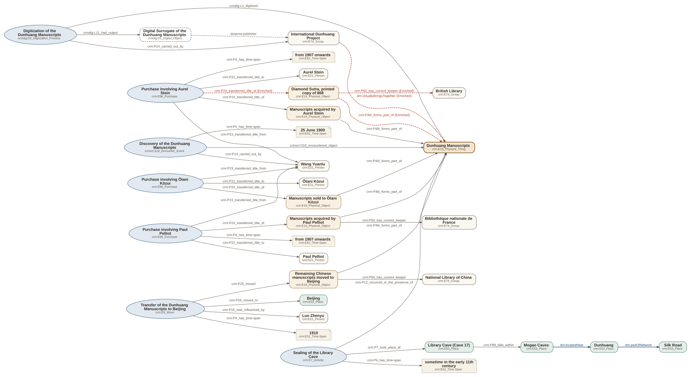

Chapter 05 · RDF
RDF
The question of this pageWhat does the data say?
We produced an RDF dataset in Turtle and RDF/XML, linked to external authorities.
One event, in Turtle
Sample
The purchase involving Aurel Stein, as it appears in the dataset.
resource:purchase-stein a crm:E96_Purchase ;
rdfs:label "Purchase involving Aurel Stein"@en ;
crm:P22_transferred_title_to resource:aurel-stein ;
crm:P23_transferred_title_from resource:wang-yuanlu ;
crm:P24_transferred_title_of resource:diamond-sutra-868,
resource:stein-portion ;
crm:P4_has_time-span resource:timespan-purchase-stein .The highlighted line, read as one triple:
Subject
resource:purchase-steinhttps://haopuur-max.github.io/reconnecting-dunhuang/resource/purchase-steinan IRI or a blank nodePredicate
crm:P22_transferred_title_tohttp://www.cidoc-crm.org/cidoc-crm/P22_transferred_title_toalways an IRI, here from an ontologyObject
resource:aurel-steinhttps://haopuur-max.github.io/reconnecting-dunhuang/resource/aurel-steinan IRI, a literal or a blank nodeExternal authorities
Linking
We aligned entities to Wikidata, VIAF, the Library of Congress and FAST, using owl:sameAs for people and institutions, rdfs:seeAlso for authority records, and skos:exactMatch for concepts.
Every identifier and its link
| Entity | Class | Scheme | Identifier | External link |
|---|---|---|---|---|
| Aurel Stein | crm:E21_Person | Library of Congress Name Authority File | n82045000 | rdfs:seeAlso |
| Aurel Stein | crm:E21_Person | VIAF | 88967071 | rdfs:seeAlso |
| Aurel Stein | crm:E21_Person | Wikidata | Q313061 | owl:sameAs |
| Aurel Stein | crm:E21_Person | WorldCat Entity | E39PBJcc8RpgyQVjD6fDkFB9Dq | rdfs:seeAlso |
| Beijing | crm:E53_Place | VIAF | 127787278 | rdfs:seeAlso |
| Beijing | crm:E53_Place | Wikidata | Q956 | rdfs:seeAlso |
| Bibliothèque nationale de France | crm:E74_Group | Library of Congress Name Authority File | no95028191 | rdfs:seeAlso |
| Bibliothèque nationale de France | crm:E74_Group | Wikidata | Q193563 | owl:sameAs |
| British Library | crm:E74_Group | Library of Congress Name Authority File | n81139951 | rdfs:seeAlso |
| British Library | crm:E74_Group | Wikidata | Q23308 | owl:sameAs |
| Diamond Sutra, printed copy of 868 | crm:E19_Physical_Object | British Library shelfmark | Or.8210/P.2 | Identifier only |
| Diamond Sutra, printed copy of 868 | crm:E19_Physical_Object | Wikidata | Q28097186 | rdfs:seeAlso |
| Dunhuang | crm:E53_Place | FAST (OCLC) | 1278691 | rdfs:seeAlso |
| Dunhuang | crm:E53_Place | FAST control number (OCLC) | fst01278691 | Identifier only |
| Dunhuang | crm:E53_Place | Library of Congress Name Authority File | nr96042661 | rdfs:seeAlso |
| Dunhuang | crm:E53_Place | VIAF | 168042699 | rdfs:seeAlso |
| Dunhuang | crm:E53_Place | Wikidata | Q319114 | rdfs:seeAlso |
| Dunhuang Manuscripts | crm:E18_Physical_Thing | FAST (OCLC) | 1356877 | rdfs:seeAlso |
| Dunhuang Manuscripts | crm:E18_Physical_Thing | FAST control number (OCLC) | fst01356877 | Identifier only |
| Dunhuang Manuscripts | crm:E18_Physical_Thing | Library of Congress Name Authority File | n82066451 | rdfs:seeAlso |
| Dunhuang Manuscripts | crm:E18_Physical_Thing | VIAF | 178621901 | rdfs:seeAlso |
| Dunhuang Manuscripts | crm:E18_Physical_Thing | Wikidata | Q276864 | rdfs:seeAlso |
| International Dunhuang Project | crm:E74_Group | Wikidata | Q3754962 | owl:sameAs |
| Library Cave (Cave 17) | crm:E53_Place | Wikidata | Q28097247 | rdfs:seeAlso |
| Luo Zhenyu | crm:E21_Person | Library of Congress Name Authority File | n81076827 | rdfs:seeAlso |
| Luo Zhenyu | crm:E21_Person | VIAF | 16093476 | rdfs:seeAlso |
| Luo Zhenyu | crm:E21_Person | Wikidata | Q716405 | owl:sameAs |
| Mogao Caves | crm:E53_Place | FAST (OCLC) | 1240618 | rdfs:seeAlso |
| Mogao Caves | crm:E53_Place | FAST control number (OCLC) | fst01240618 | Identifier only |
| Mogao Caves | crm:E53_Place | Library of Congress Subject Headings | sh86007577 | rdfs:seeAlso |
| Mogao Caves | crm:E53_Place | Wikidata | Q43286 | rdfs:seeAlso |
| National Library of China | crm:E74_Group | Library of Congress Name Authority File | no2001051712 | rdfs:seeAlso |
| National Library of China | crm:E74_Group | Wikidata | Q732353 | owl:sameAs |
| Paul Pelliot | crm:E21_Person | Library of Congress Name Authority File | n50048941 | rdfs:seeAlso |
| Paul Pelliot | crm:E21_Person | VIAF | 73858373 | rdfs:seeAlso |
| Paul Pelliot | crm:E21_Person | Wikidata | Q368821 | owl:sameAs |
| Silk Road | crm:E53_Place | FAST (OCLC) | 1243730 | rdfs:seeAlso |
| Silk Road | crm:E53_Place | FAST control number (OCLC) | fst01243730 | Identifier only |
| Silk Road | crm:E53_Place | Library of Congress Subject Headings | sh85122554 | rdfs:seeAlso |
| Silk Road | crm:E53_Place | Wikidata | Q36288 | rdfs:seeAlso |
| Tokyo National Museum | crm:E74_Group | Wikidata | Q653433 | owl:sameAs |
| Wang Yuanlu | crm:E21_Person | Wikidata | Q1202225 | owl:sameAs |
| Ōtani Kōzui | crm:E21_Person | Library of Congress Name Authority File | n85315990 | rdfs:seeAlso |
| Ōtani Kōzui | crm:E21_Person | VIAF | 113770129 | rdfs:seeAlso |
| Ōtani Kōzui | crm:E21_Person | Wikidata | Q386254 | owl:sameAs |
Identifiers
URIs
- Resources
https://haopuur-max.github.io/reconnecting-dunhuang/resource/{id}- Properties
https://haopuur-max.github.io/reconnecting-dunhuang/ontology/{name}(prefixdm:)
https://haopuur-max.github.io/reconnecting-dunhuang/resource/dunhuang-manuscriptshttps://haopuur-max.github.io/reconnecting-dunhuang/resource/aurel-steinhttps://haopuur-max.github.io/reconnecting-dunhuang/resource/purchase-steinhttps://haopuur-max.github.io/reconnecting-dunhuang/resource/timespan-purchase-steinhttps://haopuur-max.github.io/reconnecting-dunhuang/ontology/virtuallyBringsTogether
These URIs are stable identifiers in a namespace the project controls. They are not yet dereferenceable: the website is not published at this address, and a static host would also need one page per resource. Online resolution has not been verified.
The whole graph
Visualization

All conceptual relations
| Subject | Property | Object | From |
|---|---|---|---|
| Dunhuang | dm:partOfNetwork | Silk Road | R1 |
| Mogao Caves | dm:locatedNear | Dunhuang | R2 |
| Library Cave (Cave 17) | crm:P89_falls_within | Mogao Caves | R3 |
| #sealing-event | crm:P12_occurred_in_the_presence_of | Dunhuang Manuscripts | R4 |
| #sealing-event | crm:P7_took_place_at | Library Cave (Cave 17) | R4 |
| #discovery-event | crm:P14_carried_out_by | Wang Yuanlu | R5 |
| #discovery-event | crmsci:O19_encountered_object | Dunhuang Manuscripts | R5 |
| #discovery-event | crm:P4_has_time-span | #timespan-1900-06-25 | R5 |
| #purchase-stein | crm:P23_transferred_title_from | Wang Yuanlu | R6 |
| #purchase-stein | crm:P22_transferred_title_to | Aurel Stein | R6 |
| #purchase-stein | crm:P24_transferred_title_of | Manuscripts acquired by Aurel Stein | R6 |
| #purchase-pelliot | crm:P23_transferred_title_from | Wang Yuanlu | R7 |
| #purchase-pelliot | crm:P22_transferred_title_to | Paul Pelliot | R7 |
| #purchase-pelliot | crm:P24_transferred_title_of | Manuscripts acquired by Paul Pelliot | R7 |
| #purchase-otani | crm:P23_transferred_title_from | Wang Yuanlu | R8 |
| #purchase-otani | crm:P22_transferred_title_to | Ōtani Kōzui | R8 |
| #purchase-otani | crm:P24_transferred_title_of | Manuscripts sold to Ōtani Kōzui | R8 |
| Manuscripts acquired by Paul Pelliot | crm:P50_has_current_keeper | Bibliothèque nationale de France | R10 |
| Remaining Chinese manuscripts moved to Beijing | crm:P50_has_current_keeper | National Library of China | R11 |
| #transfer-beijing | crm:P25_moved | Remaining Chinese manuscripts moved to Beijing | R13 |
| #transfer-beijing | crm:P26_moved_to | Beijing | R13 |
| #transfer-beijing | crm:P15_was_influenced_by | Luo Zhenyu | R13 |
| #transfer-beijing | crm:P4_has_time-span | #timespan-1910 | R13 |
| #digitization-event | crm:P14_carried_out_by | International Dunhuang Project | R14 |
| #digitization-event | crmdig:L1_digitized | Dunhuang Manuscripts | R14 |
| #digitization-event | crmdig:L11_had_output | Digital Surrogate of the Dunhuang Manuscripts | R15 |
| Digital Surrogate of the Dunhuang Manuscripts | dcterms:publisher | International Dunhuang Project | R15 |
| International Dunhuang Project | dm:virtuallyBringsTogether | Dunhuang Manuscripts | R16 Enriched |
| Manuscripts acquired by Aurel Stein | crm:P46i_forms_part_of | Dunhuang Manuscripts | R6 |
| Manuscripts acquired by Paul Pelliot | crm:P46i_forms_part_of | Dunhuang Manuscripts | R7 |
| Manuscripts sold to Ōtani Kōzui | crm:P46i_forms_part_of | Dunhuang Manuscripts | R8 |
| Remaining Chinese manuscripts moved to Beijing | crm:P46i_forms_part_of | Dunhuang Manuscripts | R13 |
| #sealing-event | crm:P4_has_time-span | #timespan-sealing | R4 |
| #purchase-stein | crm:P4_has_time-span | #timespan-purchase-stein | R6 |
| #purchase-pelliot | crm:P4_has_time-span | #timespan-purchase-pelliot | R7 |
| Diamond Sutra, printed copy of 868 | crm:P46i_forms_part_of | Dunhuang Manuscripts | R17 Enriched |
| #purchase-stein | crm:P24_transferred_title_of | Diamond Sutra, printed copy of 868 | R18 Enriched |
| Diamond Sutra, printed copy of 868 | crm:P50_has_current_keeper | British Library | R19 Enriched |
Turtle and RDF/XML
The complete files
Show the complete file: reconnecting_dunhuang.ttl
@prefix crm: <http://www.cidoc-crm.org/cidoc-crm/> .
@prefix crmdig: <http://www.cidoc-crm.org/extensions/crmdig/> .
@prefix crmsci: <http://www.cidoc-crm.org/extensions/crmsci/> .
@prefix dcterms: <http://purl.org/dc/terms/> .
@prefix dm: <https://haopuur-max.github.io/reconnecting-dunhuang/ontology/> .
@prefix owl: <http://www.w3.org/2002/07/owl#> .
@prefix rdf: <http://www.w3.org/1999/02/22-rdf-syntax-ns#> .
@prefix rdfs: <http://www.w3.org/2000/01/rdf-schema#> .
@prefix resource: <https://haopuur-max.github.io/reconnecting-dunhuang/resource/> .
@prefix skos: <http://www.w3.org/2004/02/skos/core#> .
@prefix xsd: <http://www.w3.org/2001/XMLSchema#> .
<https://haopuur-max.github.io/reconnecting-dunhuang/resource/canonical-relation/r12> a crm:E89_Propositional_Object ;
rdfs:label "R12 - held_by" .
<https://haopuur-max.github.io/reconnecting-dunhuang/resource/canonical-relation/r9> a crm:E89_Propositional_Object ;
rdfs:label "R9 - held_by" .
<https://haopuur-max.github.io/reconnecting-dunhuang/resource/statement/cr1> a rdf:Statement ;
dcterms:relation <https://haopuur-max.github.io/reconnecting-dunhuang/resource/canonical-relation/r1> ;
dcterms:type <https://haopuur-max.github.io/reconnecting-dunhuang/resource/evidence/direct> ;
rdf:object resource:silk-road ;
rdf:predicate dm:partOfNetwork ;
rdf:subject resource:dunhuang .
<https://haopuur-max.github.io/reconnecting-dunhuang/resource/statement/cr10> a rdf:Statement ;
dcterms:relation <https://haopuur-max.github.io/reconnecting-dunhuang/resource/canonical-relation/r6> ;
dcterms:type <https://haopuur-max.github.io/reconnecting-dunhuang/resource/evidence/direct> ;
rdf:object resource:aurel-stein ;
rdf:predicate crm:P22_transferred_title_to ;
rdf:subject resource:purchase-stein .
<https://haopuur-max.github.io/reconnecting-dunhuang/resource/statement/cr11> a rdf:Statement ;
dcterms:relation <https://haopuur-max.github.io/reconnecting-dunhuang/resource/canonical-relation/r6> ;
dcterms:type <https://haopuur-max.github.io/reconnecting-dunhuang/resource/evidence/direct> ;
rdf:object resource:stein-portion ;
rdf:predicate crm:P24_transferred_title_of ;
rdf:subject resource:purchase-stein .
<https://haopuur-max.github.io/reconnecting-dunhuang/resource/statement/cr12> a rdf:Statement ;
dcterms:relation <https://haopuur-max.github.io/reconnecting-dunhuang/resource/canonical-relation/r7> ;
dcterms:type <https://haopuur-max.github.io/reconnecting-dunhuang/resource/evidence/direct> ;
rdf:object resource:wang-yuanlu ;
rdf:predicate crm:P23_transferred_title_from ;
rdf:subject resource:purchase-pelliot .
<https://haopuur-max.github.io/reconnecting-dunhuang/resource/statement/cr13> a rdf:Statement ;
dcterms:relation <https://haopuur-max.github.io/reconnecting-dunhuang/resource/canonical-relation/r7> ;
dcterms:type <https://haopuur-max.github.io/reconnecting-dunhuang/resource/evidence/direct> ;
rdf:object resource:paul-pelliot ;
rdf:predicate crm:P22_transferred_title_to ;
rdf:subject resource:purchase-pelliot .
<https://haopuur-max.github.io/reconnecting-dunhuang/resource/statement/cr14> a rdf:Statement ;
dcterms:relation <https://haopuur-max.github.io/reconnecting-dunhuang/resource/canonical-relation/r7> ;
dcterms:type <https://haopuur-max.github.io/reconnecting-dunhuang/resource/evidence/direct> ;
rdf:object resource:pelliot-portion ;
rdf:predicate crm:P24_transferred_title_of ;
rdf:subject resource:purchase-pelliot .
<https://haopuur-max.github.io/reconnecting-dunhuang/resource/statement/cr15> a rdf:Statement ;
dcterms:relation <https://haopuur-max.github.io/reconnecting-dunhuang/resource/canonical-relation/r8> ;
dcterms:type <https://haopuur-max.github.io/reconnecting-dunhuang/resource/evidence/direct> ;
rdf:object resource:wang-yuanlu ;
rdf:predicate crm:P23_transferred_title_from ;
rdf:subject resource:purchase-otani .
<https://haopuur-max.github.io/reconnecting-dunhuang/resource/statement/cr16> a rdf:Statement ;
dcterms:relation <https://haopuur-max.github.io/reconnecting-dunhuang/resource/canonical-relation/r8> ;
dcterms:type <https://haopuur-max.github.io/reconnecting-dunhuang/resource/evidence/direct> ;
rdf:object resource:otani-kozui ;
rdf:predicate crm:P22_transferred_title_to ;
rdf:subject resource:purchase-otani .
<https://haopuur-max.github.io/reconnecting-dunhuang/resource/statement/cr17> a rdf:Statement ;
dcterms:relation <https://haopuur-max.github.io/reconnecting-dunhuang/resource/canonical-relation/r8> ;
dcterms:type <https://haopuur-max.github.io/reconnecting-dunhuang/resource/evidence/direct> ;
rdf:object resource:otani-portion ;
rdf:predicate crm:P24_transferred_title_of ;
rdf:subject resource:purchase-otani .
<https://haopuur-max.github.io/reconnecting-dunhuang/resource/statement/cr19> a rdf:Statement ;
dcterms:relation <https://haopuur-max.github.io/reconnecting-dunhuang/resource/canonical-relation/r10> ;
dcterms:type <https://haopuur-max.github.io/reconnecting-dunhuang/resource/evidence/direct> ;
rdf:object resource:bnf ;
rdf:predicate crm:P50_has_current_keeper ;
rdf:subject resource:pelliot-portion .
<https://haopuur-max.github.io/reconnecting-dunhuang/resource/statement/cr2> a rdf:Statement ;
dcterms:relation <https://haopuur-max.github.io/reconnecting-dunhuang/resource/canonical-relation/r2> ;
dcterms:type <https://haopuur-max.github.io/reconnecting-dunhuang/resource/evidence/direct> ;
rdf:object resource:dunhuang ;
rdf:predicate dm:locatedNear ;
rdf:subject resource:mogao-caves .
<https://haopuur-max.github.io/reconnecting-dunhuang/resource/statement/cr20> a rdf:Statement ;
dcterms:relation <https://haopuur-max.github.io/reconnecting-dunhuang/resource/canonical-relation/r11> ;
dcterms:type <https://haopuur-max.github.io/reconnecting-dunhuang/resource/evidence/direct> ;
rdf:object resource:nlc ;
rdf:predicate crm:P50_has_current_keeper ;
rdf:subject resource:remaining-chinese-manuscripts .
<https://haopuur-max.github.io/reconnecting-dunhuang/resource/statement/cr22> a rdf:Statement ;
dcterms:relation <https://haopuur-max.github.io/reconnecting-dunhuang/resource/canonical-relation/r13> ;
dcterms:type <https://haopuur-max.github.io/reconnecting-dunhuang/resource/evidence/direct> ;
rdf:object resource:remaining-chinese-manuscripts ;
rdf:predicate crm:P25_moved ;
rdf:subject resource:transfer-beijing .
<https://haopuur-max.github.io/reconnecting-dunhuang/resource/statement/cr23> a rdf:Statement ;
dcterms:relation <https://haopuur-max.github.io/reconnecting-dunhuang/resource/canonical-relation/r13> ;
dcterms:type <https://haopuur-max.github.io/reconnecting-dunhuang/resource/evidence/direct> ;
rdf:object resource:beijing ;
rdf:predicate crm:P26_moved_to ;
rdf:subject resource:transfer-beijing .
<https://haopuur-max.github.io/reconnecting-dunhuang/resource/statement/cr24> a rdf:Statement ;
dcterms:relation <https://haopuur-max.github.io/reconnecting-dunhuang/resource/canonical-relation/r13> ;
dcterms:type <https://haopuur-max.github.io/reconnecting-dunhuang/resource/evidence/direct> ;
rdf:object resource:luo-zhenyu ;
rdf:predicate crm:P15_was_influenced_by ;
rdf:subject resource:transfer-beijing .
<https://haopuur-max.github.io/reconnecting-dunhuang/resource/statement/cr25> a rdf:Statement ;
dcterms:relation <https://haopuur-max.github.io/reconnecting-dunhuang/resource/canonical-relation/r13> ;
dcterms:type <https://haopuur-max.github.io/reconnecting-dunhuang/resource/evidence/direct> ;
rdf:object resource:timespan-1910 ;
rdf:predicate crm:P4_has_time-span ;
rdf:subject resource:transfer-beijing .
<https://haopuur-max.github.io/reconnecting-dunhuang/resource/statement/cr26> a rdf:Statement ;
dcterms:relation <https://haopuur-max.github.io/reconnecting-dunhuang/resource/canonical-relation/r14> ;
dcterms:type <https://haopuur-max.github.io/reconnecting-dunhuang/resource/evidence/direct> ;
rdf:object resource:idp ;
rdf:predicate crm:P14_carried_out_by ;
rdf:subject resource:digitization-event .
<https://haopuur-max.github.io/reconnecting-dunhuang/resource/statement/cr27> a rdf:Statement ;
dcterms:relation <https://haopuur-max.github.io/reconnecting-dunhuang/resource/canonical-relation/r14> ;
dcterms:type <https://haopuur-max.github.io/reconnecting-dunhuang/resource/evidence/direct> ;
rdf:object resource:dunhuang-manuscripts ;
rdf:predicate crmdig:L1_digitized ;
rdf:subject resource:digitization-event .
<https://haopuur-max.github.io/reconnecting-dunhuang/resource/statement/cr28> a rdf:Statement ;
dcterms:relation <https://haopuur-max.github.io/reconnecting-dunhuang/resource/canonical-relation/r15> ;
dcterms:type <https://haopuur-max.github.io/reconnecting-dunhuang/resource/evidence/direct> ;
rdf:object resource:digital-surrogate ;
rdf:predicate crmdig:L11_had_output ;
rdf:subject resource:digitization-event .
<https://haopuur-max.github.io/reconnecting-dunhuang/resource/statement/cr29> a rdf:Statement ;
dcterms:relation <https://haopuur-max.github.io/reconnecting-dunhuang/resource/canonical-relation/r15> ;
dcterms:type <https://haopuur-max.github.io/reconnecting-dunhuang/resource/evidence/direct> ;
rdf:object resource:idp ;
rdf:predicate dcterms:publisher ;
rdf:subject resource:digital-surrogate .
<https://haopuur-max.github.io/reconnecting-dunhuang/resource/statement/cr3> a rdf:Statement ;
dcterms:relation <https://haopuur-max.github.io/reconnecting-dunhuang/resource/canonical-relation/r3> ;
dcterms:type <https://haopuur-max.github.io/reconnecting-dunhuang/resource/evidence/direct> ;
rdf:object resource:mogao-caves ;
rdf:predicate crm:P89_falls_within ;
rdf:subject resource:library-cave .
<https://haopuur-max.github.io/reconnecting-dunhuang/resource/statement/cr30> a rdf:Statement ;
dcterms:relation <https://haopuur-max.github.io/reconnecting-dunhuang/resource/canonical-relation/r16> ;
dcterms:source <https://idp.bl.uk/about/> ;
dcterms:type <https://haopuur-max.github.io/reconnecting-dunhuang/resource/evidence/enriched> ;
rdf:object resource:dunhuang-manuscripts ;
rdf:predicate dm:virtuallyBringsTogether ;
rdf:subject resource:idp .
<https://haopuur-max.github.io/reconnecting-dunhuang/resource/statement/cr31> a rdf:Statement ;
dcterms:relation <https://haopuur-max.github.io/reconnecting-dunhuang/resource/canonical-relation/r6> ;
dcterms:type <https://haopuur-max.github.io/reconnecting-dunhuang/resource/evidence/direct> ;
rdf:object resource:dunhuang-manuscripts ;
rdf:predicate crm:P46i_forms_part_of ;
rdf:subject resource:stein-portion .
<https://haopuur-max.github.io/reconnecting-dunhuang/resource/statement/cr32> a rdf:Statement ;
dcterms:relation <https://haopuur-max.github.io/reconnecting-dunhuang/resource/canonical-relation/r7> ;
dcterms:type <https://haopuur-max.github.io/reconnecting-dunhuang/resource/evidence/direct> ;
rdf:object resource:dunhuang-manuscripts ;
rdf:predicate crm:P46i_forms_part_of ;
rdf:subject resource:pelliot-portion .
<https://haopuur-max.github.io/reconnecting-dunhuang/resource/statement/cr33> a rdf:Statement ;
dcterms:relation <https://haopuur-max.github.io/reconnecting-dunhuang/resource/canonical-relation/r8> ;
dcterms:type <https://haopuur-max.github.io/reconnecting-dunhuang/resource/evidence/direct> ;
rdf:object resource:dunhuang-manuscripts ;
rdf:predicate crm:P46i_forms_part_of ;
rdf:subject resource:otani-portion .
<https://haopuur-max.github.io/reconnecting-dunhuang/resource/statement/cr34> a rdf:Statement ;
dcterms:relation <https://haopuur-max.github.io/reconnecting-dunhuang/resource/canonical-relation/r13> ;
dcterms:type <https://haopuur-max.github.io/reconnecting-dunhuang/resource/evidence/direct> ;
rdf:object resource:dunhuang-manuscripts ;
rdf:predicate crm:P46i_forms_part_of ;
rdf:subject resource:remaining-chinese-manuscripts .
<https://haopuur-max.github.io/reconnecting-dunhuang/resource/statement/cr35> a rdf:Statement ;
dcterms:relation <https://haopuur-max.github.io/reconnecting-dunhuang/resource/canonical-relation/r4> ;
dcterms:type <https://haopuur-max.github.io/reconnecting-dunhuang/resource/evidence/direct> ;
rdf:object resource:timespan-sealing ;
rdf:predicate crm:P4_has_time-span ;
rdf:subject resource:sealing-event .
<https://haopuur-max.github.io/reconnecting-dunhuang/resource/statement/cr36> a rdf:Statement ;
dcterms:relation <https://haopuur-max.github.io/reconnecting-dunhuang/resource/canonical-relation/r6> ;
dcterms:type <https://haopuur-max.github.io/reconnecting-dunhuang/resource/evidence/direct> ;
rdf:object resource:timespan-purchase-stein ;
rdf:predicate crm:P4_has_time-span ;
rdf:subject resource:purchase-stein .
<https://haopuur-max.github.io/reconnecting-dunhuang/resource/statement/cr37> a rdf:Statement ;
dcterms:relation <https://haopuur-max.github.io/reconnecting-dunhuang/resource/canonical-relation/r7> ;
dcterms:type <https://haopuur-max.github.io/reconnecting-dunhuang/resource/evidence/direct> ;
rdf:object resource:timespan-purchase-pelliot ;
rdf:predicate crm:P4_has_time-span ;
rdf:subject resource:purchase-pelliot .
<https://haopuur-max.github.io/reconnecting-dunhuang/resource/statement/cr38> a rdf:Statement ;
dcterms:relation <https://haopuur-max.github.io/reconnecting-dunhuang/resource/canonical-relation/r17> ;
dcterms:source <https://idp.bl.uk/blog/shaping-the-stein-collections-dunhuang-corpus-2-the-items-from-cave-17s-miscellaneous-bundles/>,
<https://idp.bl.uk/blog/the-diamond-sutra/> ;
dcterms:type <https://haopuur-max.github.io/reconnecting-dunhuang/resource/evidence/enriched> ;
rdf:object resource:dunhuang-manuscripts ;
rdf:predicate crm:P46i_forms_part_of ;
rdf:subject resource:diamond-sutra-868 .
<https://haopuur-max.github.io/reconnecting-dunhuang/resource/statement/cr39> a rdf:Statement ;
dcterms:relation <https://haopuur-max.github.io/reconnecting-dunhuang/resource/canonical-relation/r18> ;
dcterms:source <https://idp.bl.uk/blog/shaping-the-stein-collections-dunhuang-corpus-2-the-items-from-cave-17s-miscellaneous-bundles/>,
<https://idp.bl.uk/learning/dunhuang/dunhuang-articles/cave-17-the-library-cave/discovering-cave-17> ;
dcterms:type <https://haopuur-max.github.io/reconnecting-dunhuang/resource/evidence/enriched> ;
rdf:object resource:diamond-sutra-868 ;
rdf:predicate crm:P24_transferred_title_of ;
rdf:subject resource:purchase-stein .
<https://haopuur-max.github.io/reconnecting-dunhuang/resource/statement/cr4> a rdf:Statement ;
dcterms:relation <https://haopuur-max.github.io/reconnecting-dunhuang/resource/canonical-relation/r4> ;
dcterms:type <https://haopuur-max.github.io/reconnecting-dunhuang/resource/evidence/direct> ;
rdf:object resource:dunhuang-manuscripts ;
rdf:predicate crm:P12_occurred_in_the_presence_of ;
rdf:subject resource:sealing-event .
<https://haopuur-max.github.io/reconnecting-dunhuang/resource/statement/cr40> a rdf:Statement ;
dcterms:relation <https://haopuur-max.github.io/reconnecting-dunhuang/resource/canonical-relation/r19> ;
dcterms:source <https://idp.bl.uk/collection/51FDAEAFB4A24E2E9981692A98130BC8> ;
dcterms:type <https://haopuur-max.github.io/reconnecting-dunhuang/resource/evidence/enriched> ;
rdf:object resource:british-library ;
rdf:predicate crm:P50_has_current_keeper ;
rdf:subject resource:diamond-sutra-868 .
<https://haopuur-max.github.io/reconnecting-dunhuang/resource/statement/cr5> a rdf:Statement ;
dcterms:relation <https://haopuur-max.github.io/reconnecting-dunhuang/resource/canonical-relation/r4> ;
dcterms:type <https://haopuur-max.github.io/reconnecting-dunhuang/resource/evidence/direct> ;
rdf:object resource:library-cave ;
rdf:predicate crm:P7_took_place_at ;
rdf:subject resource:sealing-event .
<https://haopuur-max.github.io/reconnecting-dunhuang/resource/statement/cr6> a rdf:Statement ;
dcterms:relation <https://haopuur-max.github.io/reconnecting-dunhuang/resource/canonical-relation/r5> ;
dcterms:type <https://haopuur-max.github.io/reconnecting-dunhuang/resource/evidence/direct> ;
rdf:object resource:wang-yuanlu ;
rdf:predicate crm:P14_carried_out_by ;
rdf:subject resource:discovery-event .
<https://haopuur-max.github.io/reconnecting-dunhuang/resource/statement/cr7> a rdf:Statement ;
dcterms:relation <https://haopuur-max.github.io/reconnecting-dunhuang/resource/canonical-relation/r5> ;
dcterms:type <https://haopuur-max.github.io/reconnecting-dunhuang/resource/evidence/direct> ;
rdf:object resource:dunhuang-manuscripts ;
rdf:predicate crmsci:O19_encountered_object ;
rdf:subject resource:discovery-event .
<https://haopuur-max.github.io/reconnecting-dunhuang/resource/statement/cr8> a rdf:Statement ;
dcterms:relation <https://haopuur-max.github.io/reconnecting-dunhuang/resource/canonical-relation/r5> ;
dcterms:type <https://haopuur-max.github.io/reconnecting-dunhuang/resource/evidence/direct> ;
rdf:object resource:timespan-1900-06-25 ;
rdf:predicate crm:P4_has_time-span ;
rdf:subject resource:discovery-event .
<https://haopuur-max.github.io/reconnecting-dunhuang/resource/statement/cr9> a rdf:Statement ;
dcterms:relation <https://haopuur-max.github.io/reconnecting-dunhuang/resource/canonical-relation/r6> ;
dcterms:type <https://haopuur-max.github.io/reconnecting-dunhuang/resource/evidence/direct> ;
rdf:object resource:wang-yuanlu ;
rdf:predicate crm:P23_transferred_title_from ;
rdf:subject resource:purchase-stein .
resource:tokyo-national-museum a crm:E74_Group ;
rdfs:label "Tokyo National Museum"@en,
"東京国立博物館"@ja ;
crm:P1_is_identified_by resource:tokyo-national-museum-wikidata ;
owl:sameAs <http://www.wikidata.org/entity/Q653433> .
resource:aurel-stein-lc a crm:E42_Identifier ;
crm:P190_has_symbolic_content "n82045000" ;
crm:P2_has_type <https://haopuur-max.github.io/reconnecting-dunhuang/resource/identifier-type/lc> .
resource:aurel-stein-viaf a crm:E42_Identifier ;
crm:P190_has_symbolic_content "88967071" ;
crm:P2_has_type <https://haopuur-max.github.io/reconnecting-dunhuang/resource/identifier-type/viaf> .
resource:aurel-stein-wikidata a crm:E42_Identifier ;
crm:P190_has_symbolic_content "Q313061" ;
crm:P2_has_type <https://haopuur-max.github.io/reconnecting-dunhuang/resource/identifier-type/wikidata> .
resource:aurel-stein-worldcat-entity a crm:E42_Identifier ;
crm:P190_has_symbolic_content "E39PBJcc8RpgyQVjD6fDkFB9Dq" ;
crm:P2_has_type <https://haopuur-max.github.io/reconnecting-dunhuang/resource/identifier-type/worldcat-entity> .
resource:beijing-viaf a crm:E42_Identifier ;
crm:P190_has_symbolic_content "127787278" ;
crm:P2_has_type <https://haopuur-max.github.io/reconnecting-dunhuang/resource/identifier-type/viaf> .
resource:beijing-wikidata a crm:E42_Identifier ;
crm:P190_has_symbolic_content "Q956" ;
crm:P2_has_type <https://haopuur-max.github.io/reconnecting-dunhuang/resource/identifier-type/wikidata> .
resource:bnf-lc a crm:E42_Identifier ;
crm:P190_has_symbolic_content "no95028191" ;
crm:P2_has_type <https://haopuur-max.github.io/reconnecting-dunhuang/resource/identifier-type/lc> .
resource:bnf-wikidata a crm:E42_Identifier ;
crm:P190_has_symbolic_content "Q193563" ;
crm:P2_has_type <https://haopuur-max.github.io/reconnecting-dunhuang/resource/identifier-type/wikidata> .
resource:british-library-lc a crm:E42_Identifier ;
crm:P190_has_symbolic_content "n81139951" ;
crm:P2_has_type <https://haopuur-max.github.io/reconnecting-dunhuang/resource/identifier-type/lc> .
resource:british-library-wikidata a crm:E42_Identifier ;
crm:P190_has_symbolic_content "Q23308" ;
crm:P2_has_type <https://haopuur-max.github.io/reconnecting-dunhuang/resource/identifier-type/wikidata> .
<https://haopuur-max.github.io/reconnecting-dunhuang/resource/canonical-relation/r1> a crm:E89_Propositional_Object ;
rdfs:label "R1 - part_of_network" .
<https://haopuur-max.github.io/reconnecting-dunhuang/resource/canonical-relation/r10> a crm:E89_Propositional_Object ;
rdfs:label "R10 - held_by" .
<https://haopuur-max.github.io/reconnecting-dunhuang/resource/canonical-relation/r11> a crm:E89_Propositional_Object ;
rdfs:label "R11 - held_by" .
<https://haopuur-max.github.io/reconnecting-dunhuang/resource/canonical-relation/r16> a crm:E89_Propositional_Object ;
rdfs:label "R16 - virtually_brings_together" .
<https://haopuur-max.github.io/reconnecting-dunhuang/resource/canonical-relation/r17> a crm:E89_Propositional_Object ;
rdfs:label "R17 - part_of" .
<https://haopuur-max.github.io/reconnecting-dunhuang/resource/canonical-relation/r18> a crm:E89_Propositional_Object ;
rdfs:label "R18 - acquired_by" .
<https://haopuur-max.github.io/reconnecting-dunhuang/resource/canonical-relation/r19> a crm:E89_Propositional_Object ;
rdfs:label "R19 - held_by" .
<https://haopuur-max.github.io/reconnecting-dunhuang/resource/canonical-relation/r2> a crm:E89_Propositional_Object ;
rdfs:label "R2 - located_near" .
<https://haopuur-max.github.io/reconnecting-dunhuang/resource/canonical-relation/r3> a crm:E89_Propositional_Object ;
rdfs:label "R3 - located_within" .
resource:concept-buddhism a skos:Concept ;
skos:exactMatch <http://id.loc.gov/authorities/subjects/sh85017454>,
<http://www.wikidata.org/entity/Q748> ;
skos:inScheme <https://haopuur-max.github.io/reconnecting-dunhuang/resource/concept-scheme/religious-traditions> ;
skos:prefLabel "Buddhism"@en .
resource:concept-confucianism a skos:Concept ;
skos:exactMatch <http://id.loc.gov/authorities/subjects/sh85031069>,
<http://www.wikidata.org/entity/Q9581> ;
skos:inScheme <https://haopuur-max.github.io/reconnecting-dunhuang/resource/concept-scheme/religious-traditions> ;
skos:prefLabel "Confucianism"@en .
resource:concept-daoism a skos:Concept ;
skos:exactMatch <http://id.loc.gov/authorities/subjects/sh85132392>,
<http://www.wikidata.org/entity/Q9598> ;
skos:inScheme <https://haopuur-max.github.io/reconnecting-dunhuang/resource/concept-scheme/religious-traditions> ;
skos:prefLabel "Daoism"@en .
resource:concept-judaism a skos:Concept ;
skos:exactMatch <http://id.loc.gov/authorities/subjects/sh85070835>,
<http://www.wikidata.org/entity/Q9268> ;
skos:inScheme <https://haopuur-max.github.io/reconnecting-dunhuang/resource/concept-scheme/religious-traditions> ;
skos:prefLabel "Judaism"@en .
resource:concept-manichaeism a skos:Concept ;
skos:exactMatch <http://id.loc.gov/authorities/subjects/sh85080542>,
<http://www.wikidata.org/entity/Q131165> ;
skos:inScheme <https://haopuur-max.github.io/reconnecting-dunhuang/resource/concept-scheme/religious-traditions> ;
skos:prefLabel "Manichaeism"@en .
resource:concept-nestorian-christianity a skos:Concept ;
skos:exactMatch <http://www.wikidata.org/entity/Q168414> ;
skos:inScheme <https://haopuur-max.github.io/reconnecting-dunhuang/resource/concept-scheme/religious-traditions> ;
skos:prefLabel "Nestorian Christianity"@en .
resource:diamond-sutra-868-bl-shelfmark a crm:E42_Identifier ;
crm:P190_has_symbolic_content "Or.8210/P.2" ;
crm:P2_has_type <https://haopuur-max.github.io/reconnecting-dunhuang/resource/identifier-type/bl-shelfmark> .
resource:diamond-sutra-868-wikidata a crm:E42_Identifier ;
crm:P190_has_symbolic_content "Q28097186" ;
crm:P2_has_type <https://haopuur-max.github.io/reconnecting-dunhuang/resource/identifier-type/wikidata> .
resource:dunhuang-fast a crm:E42_Identifier ;
crm:P190_has_symbolic_content "1278691" ;
crm:P2_has_type <https://haopuur-max.github.io/reconnecting-dunhuang/resource/identifier-type/fast> .
resource:dunhuang-fast-control-number a crm:E42_Identifier ;
crm:P190_has_symbolic_content "fst01278691" ;
crm:P2_has_type <https://haopuur-max.github.io/reconnecting-dunhuang/resource/identifier-type/fast-control-number> .
resource:dunhuang-lc a crm:E42_Identifier ;
crm:P190_has_symbolic_content "nr96042661" ;
crm:P2_has_type <https://haopuur-max.github.io/reconnecting-dunhuang/resource/identifier-type/lc> .
resource:dunhuang-manuscripts-fast a crm:E42_Identifier ;
crm:P190_has_symbolic_content "1356877" ;
crm:P2_has_type <https://haopuur-max.github.io/reconnecting-dunhuang/resource/identifier-type/fast> .
resource:dunhuang-manuscripts-fast-control-number a crm:E42_Identifier ;
crm:P190_has_symbolic_content "fst01356877" ;
crm:P2_has_type <https://haopuur-max.github.io/reconnecting-dunhuang/resource/identifier-type/fast-control-number> .
resource:dunhuang-manuscripts-lc a crm:E42_Identifier ;
crm:P190_has_symbolic_content "n82066451" ;
crm:P2_has_type <https://haopuur-max.github.io/reconnecting-dunhuang/resource/identifier-type/lc> .
resource:dunhuang-manuscripts-viaf a crm:E42_Identifier ;
crm:P190_has_symbolic_content "178621901" ;
crm:P2_has_type <https://haopuur-max.github.io/reconnecting-dunhuang/resource/identifier-type/viaf> .
resource:dunhuang-manuscripts-wikidata a crm:E42_Identifier ;
crm:P190_has_symbolic_content "Q276864" ;
crm:P2_has_type <https://haopuur-max.github.io/reconnecting-dunhuang/resource/identifier-type/wikidata> .
resource:dunhuang-viaf a crm:E42_Identifier ;
crm:P190_has_symbolic_content "168042699" ;
crm:P2_has_type <https://haopuur-max.github.io/reconnecting-dunhuang/resource/identifier-type/viaf> .
resource:dunhuang-wikidata a crm:E42_Identifier ;
crm:P190_has_symbolic_content "Q319114" ;
crm:P2_has_type <https://haopuur-max.github.io/reconnecting-dunhuang/resource/identifier-type/wikidata> .
<https://haopuur-max.github.io/reconnecting-dunhuang/resource/identifier-type/bl-shelfmark> a crm:E55_Type ;
rdfs:label "British Library shelfmark" .
<https://haopuur-max.github.io/reconnecting-dunhuang/resource/identifier-type/worldcat-entity> a crm:E55_Type ;
rdfs:label "WorldCat Entity" .
resource:idp-wikidata a crm:E42_Identifier ;
crm:P190_has_symbolic_content "Q3754962" ;
crm:P2_has_type <https://haopuur-max.github.io/reconnecting-dunhuang/resource/identifier-type/wikidata> .
resource:library-cave-wikidata a crm:E42_Identifier ;
crm:P190_has_symbolic_content "Q28097247" ;
crm:P2_has_type <https://haopuur-max.github.io/reconnecting-dunhuang/resource/identifier-type/wikidata> .
resource:luo-zhenyu-lc a crm:E42_Identifier ;
crm:P190_has_symbolic_content "n81076827" ;
crm:P2_has_type <https://haopuur-max.github.io/reconnecting-dunhuang/resource/identifier-type/lc> .
resource:luo-zhenyu-viaf a crm:E42_Identifier ;
crm:P190_has_symbolic_content "16093476" ;
crm:P2_has_type <https://haopuur-max.github.io/reconnecting-dunhuang/resource/identifier-type/viaf> .
resource:luo-zhenyu-wikidata a crm:E42_Identifier ;
crm:P190_has_symbolic_content "Q716405" ;
crm:P2_has_type <https://haopuur-max.github.io/reconnecting-dunhuang/resource/identifier-type/wikidata> .
resource:mogao-caves-fast a crm:E42_Identifier ;
crm:P190_has_symbolic_content "1240618" ;
crm:P2_has_type <https://haopuur-max.github.io/reconnecting-dunhuang/resource/identifier-type/fast> .
resource:mogao-caves-fast-control-number a crm:E42_Identifier ;
crm:P190_has_symbolic_content "fst01240618" ;
crm:P2_has_type <https://haopuur-max.github.io/reconnecting-dunhuang/resource/identifier-type/fast-control-number> .
resource:mogao-caves-lcsh a crm:E42_Identifier ;
crm:P190_has_symbolic_content "sh86007577" ;
crm:P2_has_type <https://haopuur-max.github.io/reconnecting-dunhuang/resource/identifier-type/lcsh> .
resource:mogao-caves-wikidata a crm:E42_Identifier ;
crm:P190_has_symbolic_content "Q43286" ;
crm:P2_has_type <https://haopuur-max.github.io/reconnecting-dunhuang/resource/identifier-type/wikidata> .
resource:nlc-lc a crm:E42_Identifier ;
crm:P190_has_symbolic_content "no2001051712" ;
crm:P2_has_type <https://haopuur-max.github.io/reconnecting-dunhuang/resource/identifier-type/lc> .
resource:nlc-wikidata a crm:E42_Identifier ;
crm:P190_has_symbolic_content "Q732353" ;
crm:P2_has_type <https://haopuur-max.github.io/reconnecting-dunhuang/resource/identifier-type/wikidata> .
resource:otani-kozui-lc a crm:E42_Identifier ;
crm:P190_has_symbolic_content "n85315990" ;
crm:P2_has_type <https://haopuur-max.github.io/reconnecting-dunhuang/resource/identifier-type/lc> .
resource:otani-kozui-viaf a crm:E42_Identifier ;
crm:P190_has_symbolic_content "113770129" ;
crm:P2_has_type <https://haopuur-max.github.io/reconnecting-dunhuang/resource/identifier-type/viaf> .
resource:otani-kozui-wikidata a crm:E42_Identifier ;
crm:P190_has_symbolic_content "Q386254" ;
crm:P2_has_type <https://haopuur-max.github.io/reconnecting-dunhuang/resource/identifier-type/wikidata> .
resource:paul-pelliot-lc a crm:E42_Identifier ;
crm:P190_has_symbolic_content "n50048941" ;
crm:P2_has_type <https://haopuur-max.github.io/reconnecting-dunhuang/resource/identifier-type/lc> .
resource:paul-pelliot-viaf a crm:E42_Identifier ;
crm:P190_has_symbolic_content "73858373" ;
crm:P2_has_type <https://haopuur-max.github.io/reconnecting-dunhuang/resource/identifier-type/viaf> .
resource:paul-pelliot-wikidata a crm:E42_Identifier ;
crm:P190_has_symbolic_content "Q368821" ;
crm:P2_has_type <https://haopuur-max.github.io/reconnecting-dunhuang/resource/identifier-type/wikidata> .
resource:silk-road-fast a crm:E42_Identifier ;
crm:P190_has_symbolic_content "1243730" ;
crm:P2_has_type <https://haopuur-max.github.io/reconnecting-dunhuang/resource/identifier-type/fast> .
resource:silk-road-fast-control-number a crm:E42_Identifier ;
crm:P190_has_symbolic_content "fst01243730" ;
crm:P2_has_type <https://haopuur-max.github.io/reconnecting-dunhuang/resource/identifier-type/fast-control-number> .
resource:silk-road-lcsh a crm:E42_Identifier ;
crm:P190_has_symbolic_content "sh85122554" ;
crm:P2_has_type <https://haopuur-max.github.io/reconnecting-dunhuang/resource/identifier-type/lcsh> .
resource:silk-road-wikidata a crm:E42_Identifier ;
crm:P190_has_symbolic_content "Q36288" ;
crm:P2_has_type <https://haopuur-max.github.io/reconnecting-dunhuang/resource/identifier-type/wikidata> .
resource:tokyo-national-museum-wikidata a crm:E42_Identifier ;
crm:P190_has_symbolic_content "Q653433" ;
crm:P2_has_type <https://haopuur-max.github.io/reconnecting-dunhuang/resource/identifier-type/wikidata> .
resource:wang-yuanlu-wikidata a crm:E42_Identifier ;
crm:P190_has_symbolic_content "Q1202225" ;
crm:P2_has_type <https://haopuur-max.github.io/reconnecting-dunhuang/resource/identifier-type/wikidata> .
resource:aurel-stein a crm:E21_Person ;
rdfs:label "Aurel Stein"@en ;
crm:P1_is_identified_by resource:aurel-stein-lc,
resource:aurel-stein-viaf,
resource:aurel-stein-wikidata,
resource:aurel-stein-worldcat-entity ;
rdfs:seeAlso <http://id.loc.gov/authorities/names/n82045000>,
<http://viaf.org/viaf/88967071>,
<https://id.oclc.org/worldcat/entity/E39PBJcc8RpgyQVjD6fDkFB9Dq> ;
owl:sameAs <http://www.wikidata.org/entity/Q313061> .
resource:beijing a crm:E53_Place ;
rdfs:label "Beijing"@en,
"北京"@zh ;
crm:P1_is_identified_by resource:beijing-viaf,
resource:beijing-wikidata ;
rdfs:seeAlso <http://viaf.org/viaf/127787278>,
<http://www.wikidata.org/entity/Q956> .
resource:bnf a crm:E74_Group ;
rdfs:label "Bibliothèque nationale de France"@en ;
crm:P1_is_identified_by resource:bnf-lc,
resource:bnf-wikidata ;
rdfs:seeAlso <http://id.loc.gov/authorities/names/no95028191> ;
owl:sameAs <http://www.wikidata.org/entity/Q193563> .
resource:british-library a crm:E74_Group ;
rdfs:label "British Library"@en ;
crm:P1_is_identified_by resource:british-library-lc,
resource:british-library-wikidata ;
rdfs:seeAlso <http://id.loc.gov/authorities/names/n81139951> ;
owl:sameAs <http://www.wikidata.org/entity/Q23308> .
<https://haopuur-max.github.io/reconnecting-dunhuang/resource/canonical-relation/r14> a crm:E89_Propositional_Object ;
rdfs:label "R14 - digitizes" .
<https://haopuur-max.github.io/reconnecting-dunhuang/resource/canonical-relation/r15> a crm:E89_Propositional_Object ;
rdfs:label "R15 - provides_digital_access_to" .
<https://haopuur-max.github.io/reconnecting-dunhuang/resource/concept-scheme/evidence-types> a skos:ConceptScheme ;
rdfs:label "Evidence types (project taxonomy)" .
<https://haopuur-max.github.io/reconnecting-dunhuang/resource/identifier-type/lcsh> a crm:E55_Type ;
rdfs:label "Library of Congress Subject Headings" .
resource:luo-zhenyu a crm:E21_Person ;
rdfs:label "Luo Zhenyu"@en,
"罗振玉"@zh ;
crm:P1_is_identified_by resource:luo-zhenyu-lc,
resource:luo-zhenyu-viaf,
resource:luo-zhenyu-wikidata ;
rdfs:seeAlso <http://id.loc.gov/authorities/names/n81076827>,
<http://viaf.org/viaf/16093476> ;
owl:sameAs <http://www.wikidata.org/entity/Q716405> .
resource:nlc a crm:E74_Group ;
rdfs:label "National Library of China"@en,
"中国国家图书馆"@zh ;
crm:P1_is_identified_by resource:nlc-lc,
resource:nlc-wikidata ;
rdfs:seeAlso <http://id.loc.gov/authorities/names/no2001051712> ;
owl:sameAs <http://www.wikidata.org/entity/Q732353> .
resource:otani-kozui a crm:E21_Person ;
rdfs:label "Ōtani Kōzui"@en,
"大谷光瑞"@ja ;
crm:P1_is_identified_by resource:otani-kozui-lc,
resource:otani-kozui-viaf,
resource:otani-kozui-wikidata ;
rdfs:seeAlso <http://id.loc.gov/authorities/names/n85315990>,
<http://viaf.org/viaf/113770129> ;
owl:sameAs <http://www.wikidata.org/entity/Q386254> .
resource:paul-pelliot a crm:E21_Person ;
rdfs:label "Paul Pelliot"@en ;
crm:P1_is_identified_by resource:paul-pelliot-lc,
resource:paul-pelliot-viaf,
resource:paul-pelliot-wikidata ;
rdfs:seeAlso <http://id.loc.gov/authorities/names/n50048941>,
<http://viaf.org/viaf/73858373> ;
owl:sameAs <http://www.wikidata.org/entity/Q368821> .
resource:silk-road a crm:E53_Place ;
rdfs:label "Silk Road"@en,
"丝绸之路"@zh ;
crm:P1_is_identified_by resource:silk-road-fast,
resource:silk-road-fast-control-number,
resource:silk-road-lcsh,
resource:silk-road-wikidata ;
rdfs:seeAlso <http://id.loc.gov/authorities/subjects/sh85122554>,
<http://id.worldcat.org/fast/1243730>,
<http://www.wikidata.org/entity/Q36288> .
resource:timespan-1900-06-25 a crm:E52_Time-Span ;
rdfs:label "25 June 1900"@en ;
crm:P82a_begin_of_the_begin "1900-06-25T00:00:00"^^xsd:dateTime ;
crm:P82b_end_of_the_end "1900-06-25T23:59:59"^^xsd:dateTime .
resource:timespan-1910 a crm:E52_Time-Span ;
rdfs:label "1910"@en ;
crm:P82a_begin_of_the_begin "1910-01-01T00:00:00"^^xsd:dateTime ;
crm:P82b_end_of_the_end "1910-12-31T23:59:59"^^xsd:dateTime .
resource:timespan-purchase-pelliot a crm:E52_Time-Span ;
rdfs:label "from 1907 onwards"@en ;
crm:P82a_begin_of_the_begin "1907-01-01T00:00:00"^^xsd:dateTime .
resource:timespan-purchase-stein a crm:E52_Time-Span ;
rdfs:label "from 1907 onwards"@en ;
crm:P82a_begin_of_the_begin "1907-01-01T00:00:00"^^xsd:dateTime .
resource:timespan-sealing a crm:E52_Time-Span ;
rdfs:label "sometime in the early 11th century"@en .
<https://haopuur-max.github.io/reconnecting-dunhuang/resource/canonical-relation/r4> a crm:E89_Propositional_Object ;
rdfs:label "R4 - sealed_in" .
<https://haopuur-max.github.io/reconnecting-dunhuang/resource/canonical-relation/r5> a crm:E89_Propositional_Object ;
rdfs:label "R5 - discovered" .
resource:digital-surrogate a crmdig:D1_Digital_Object ;
rdfs:label "Digital Surrogate of the Dunhuang Manuscripts"@en ;
dcterms:publisher resource:idp .
resource:digitization-event a crmdig:D2_Digitization_Process ;
rdfs:label "Digitization of the Dunhuang Manuscripts"@en ;
crm:P14_carried_out_by resource:idp ;
crmdig:L11_had_output resource:digital-surrogate ;
crmdig:L1_digitized resource:dunhuang-manuscripts .
resource:discovery-event a crmsci:S19_Encounter_Event ;
rdfs:label "Discovery of the Dunhuang Manuscripts"@en ;
crm:P14_carried_out_by resource:wang-yuanlu ;
crm:P4_has_time-span resource:timespan-1900-06-25 ;
crmsci:O19_encountered_object resource:dunhuang-manuscripts .
resource:dunhuang a crm:E53_Place ;
rdfs:label "Dunhuang"@en,
"敦煌"@zh ;
crm:P1_is_identified_by resource:dunhuang-fast,
resource:dunhuang-fast-control-number,
resource:dunhuang-lc,
resource:dunhuang-viaf,
resource:dunhuang-wikidata ;
rdfs:seeAlso <http://id.loc.gov/authorities/names/nr96042661>,
<http://id.worldcat.org/fast/1278691>,
<http://viaf.org/viaf/168042699>,
<http://www.wikidata.org/entity/Q319114> ;
dm:partOfNetwork resource:silk-road .
resource:library-cave a crm:E53_Place ;
rdfs:label "Library Cave (Cave 17)"@en,
"藏经洞"@zh ;
crm:P1_is_identified_by resource:library-cave-wikidata ;
crm:P89_falls_within resource:mogao-caves ;
rdfs:seeAlso <http://www.wikidata.org/entity/Q28097247> .
resource:mogao-caves a crm:E53_Place ;
rdfs:label "Mogao Caves"@en,
"莫高窟"@zh ;
crm:P1_is_identified_by resource:mogao-caves-fast,
resource:mogao-caves-fast-control-number,
resource:mogao-caves-lcsh,
resource:mogao-caves-wikidata ;
rdfs:seeAlso <http://id.loc.gov/authorities/subjects/sh86007577>,
<http://id.worldcat.org/fast/1240618>,
<http://www.wikidata.org/entity/Q43286> ;
dm:locatedNear resource:dunhuang .
resource:otani-portion a crm:E19_Physical_Object ;
rdfs:label "Manuscripts sold to Ōtani Kōzui"@en ;
crm:P3_has_note "Hundreds more of the manuscripts were sold by Wang to Ōtani Kōzui and Sergey Oldenburg" ;
crm:P46i_forms_part_of resource:dunhuang-manuscripts .
resource:purchase-otani a crm:E96_Purchase ;
rdfs:label "Purchase involving Ōtani Kōzui"@en ;
crm:P22_transferred_title_to resource:otani-kozui ;
crm:P23_transferred_title_from resource:wang-yuanlu ;
crm:P24_transferred_title_of resource:otani-portion .
resource:sealing-event a crm:E7_Activity ;
rdfs:label "Sealing of the Library Cave"@en ;
crm:P12_occurred_in_the_presence_of resource:dunhuang-manuscripts ;
crm:P4_has_time-span resource:timespan-sealing ;
crm:P7_took_place_at resource:library-cave .
resource:stein-portion a crm:E19_Physical_Object ;
rdfs:label "Manuscripts acquired by Aurel Stein"@en ;
crm:P3_has_note "around 7,000 complete manuscripts and 6,000 fragments" ;
crm:P46i_forms_part_of resource:dunhuang-manuscripts .
<https://haopuur-max.github.io/reconnecting-dunhuang/resource/canonical-relation/r8> a crm:E89_Propositional_Object ;
rdfs:label "R8 - sold_manuscripts_to" .
resource:diamond-sutra-868 a crm:E19_Physical_Object ;
rdfs:label "Diamond Sutra, printed copy of 868"@en ;
crm:P1_is_identified_by resource:diamond-sutra-868-bl-shelfmark,
resource:diamond-sutra-868-wikidata ;
crm:P3_has_note "Woodblock-printed scroll of the Diamond Sutra dated 868, Stein number Ch.ciii.014; described by the International Dunhuang Programme as the world's earliest dated printed book." ;
crm:P46i_forms_part_of resource:dunhuang-manuscripts ;
crm:P50_has_current_keeper resource:british-library ;
rdfs:seeAlso <http://www.wikidata.org/entity/Q28097186> .
<https://haopuur-max.github.io/reconnecting-dunhuang/resource/evidence/enriched> a skos:Concept ;
rdfs:label "Enriched evidence (additional authoritative source)" ;
skos:definition "Enriched relation supported by an additional authoritative source rather than by the frozen Wikipedia revision. In this project: R16 is the project's interpretation of the International Dunhuang Project's (now International Dunhuang Programme) institutional description; R17-R19 add one documented item, the printed Diamond Sutra of 868 (British Library, Or.8210/P.2), from the IDP catalogue and research articles. Each Enriched relation points to its own sources (relation/@source, listBibl enrichment-sources) and is kept distinct from Direct evidence drawn from the frozen Wikipedia revision."@en ;
skos:inScheme <https://haopuur-max.github.io/reconnecting-dunhuang/resource/concept-scheme/evidence-types> .
<https://haopuur-max.github.io/reconnecting-dunhuang/resource/identifier-type/fast> a crm:E55_Type ;
rdfs:label "FAST (OCLC)" .
<https://haopuur-max.github.io/reconnecting-dunhuang/resource/identifier-type/fast-control-number> a crm:E55_Type ;
rdfs:label "FAST control number (OCLC)" .
resource:pelliot-portion a crm:E19_Physical_Object ;
rdfs:label "Manuscripts acquired by Paul Pelliot"@en ;
crm:P3_has_note "almost 10,000 documents" ;
crm:P46i_forms_part_of resource:dunhuang-manuscripts ;
crm:P50_has_current_keeper resource:bnf .
resource:purchase-pelliot a crm:E96_Purchase ;
rdfs:label "Purchase involving Paul Pelliot"@en ;
crm:P22_transferred_title_to resource:paul-pelliot ;
crm:P23_transferred_title_from resource:wang-yuanlu ;
crm:P24_transferred_title_of resource:pelliot-portion ;
crm:P4_has_time-span resource:timespan-purchase-pelliot .
resource:remaining-chinese-manuscripts a crm:E19_Physical_Object ;
rdfs:label "Remaining Chinese manuscripts moved to Beijing"@en ;
crm:P3_has_note "most of the remaining Chinese manuscripts were taken to Beijing in 1910 and are now in the National Library of China" ;
crm:P46i_forms_part_of resource:dunhuang-manuscripts ;
crm:P50_has_current_keeper resource:nlc .
resource:transfer-beijing a crm:E9_Move ;
rdfs:label "Transfer of the Dunhuang Manuscripts to Beijing"@en ;
crm:P15_was_influenced_by resource:luo-zhenyu ;
crm:P25_moved resource:remaining-chinese-manuscripts ;
crm:P26_moved_to resource:beijing ;
crm:P4_has_time-span resource:timespan-1910 .
<https://haopuur-max.github.io/reconnecting-dunhuang/resource/canonical-relation/r13> a crm:E89_Propositional_Object ;
rdfs:label "R13 - facilitated_transfer_of" .
<https://haopuur-max.github.io/reconnecting-dunhuang/resource/canonical-relation/r6> a crm:E89_Propositional_Object ;
rdfs:label "R6 - sold_manuscripts_to" .
<https://haopuur-max.github.io/reconnecting-dunhuang/resource/canonical-relation/r7> a crm:E89_Propositional_Object ;
rdfs:label "R7 - sold_manuscripts_to" .
resource:idp a crm:E74_Group ;
rdfs:label "International Dunhuang Project"@en ;
crm:P1_is_identified_by resource:idp-wikidata ;
owl:sameAs <http://www.wikidata.org/entity/Q3754962> ;
dm:virtuallyBringsTogether resource:dunhuang-manuscripts .
resource:purchase-stein a crm:E96_Purchase ;
rdfs:label "Purchase involving Aurel Stein"@en ;
crm:P22_transferred_title_to resource:aurel-stein ;
crm:P23_transferred_title_from resource:wang-yuanlu ;
crm:P24_transferred_title_of resource:diamond-sutra-868,
resource:stein-portion ;
crm:P4_has_time-span resource:timespan-purchase-stein .
<https://haopuur-max.github.io/reconnecting-dunhuang/resource/concept-scheme/religious-traditions> a skos:ConceptScheme ;
rdfs:label "Religious and philosophical traditions (project taxonomy)" .
<https://haopuur-max.github.io/reconnecting-dunhuang/resource/identifier-type/viaf> a crm:E55_Type ;
rdfs:label "VIAF" .
resource:wang-yuanlu a crm:E21_Person ;
rdfs:label "Wang Yuanlu"@en,
"王圆箓"@zh ;
crm:P1_is_identified_by resource:wang-yuanlu-wikidata ;
owl:sameAs <http://www.wikidata.org/entity/Q1202225> .
<https://haopuur-max.github.io/reconnecting-dunhuang/resource/identifier-type/lc> a crm:E55_Type ;
rdfs:label "Library of Congress Name Authority File" .
<https://haopuur-max.github.io/reconnecting-dunhuang/resource/identifier-type/wikidata> a crm:E55_Type ;
rdfs:label "Wikidata" .
resource:dunhuang-manuscripts a crm:E18_Physical_Thing ;
rdfs:label "Dunhuang Manuscripts"@en,
"敦煌文献"@zh ;
dcterms:subject resource:concept-buddhism,
resource:concept-confucianism,
resource:concept-daoism,
resource:concept-judaism,
resource:concept-manichaeism,
resource:concept-nestorian-christianity ;
crm:P1_is_identified_by resource:dunhuang-manuscripts-fast,
resource:dunhuang-manuscripts-fast-control-number,
resource:dunhuang-manuscripts-lc,
resource:dunhuang-manuscripts-viaf,
resource:dunhuang-manuscripts-wikidata ;
rdfs:seeAlso <http://id.loc.gov/authorities/names/n82066451>,
<http://id.worldcat.org/fast/1356877>,
<http://viaf.org/viaf/178621901>,
<http://www.wikidata.org/entity/Q276864> .
<https://haopuur-max.github.io/reconnecting-dunhuang/resource/evidence/direct> a skos:Concept ;
rdfs:label "Direct evidence (frozen Wikipedia revision)" ;
skos:definition "A relation extracted or modelled directly from the frozen Wikipedia revision, without implying independent historical verification."@en ;
skos:inScheme <https://haopuur-max.github.io/reconnecting-dunhuang/resource/concept-scheme/evidence-types> .Show the complete file: reconnecting_dunhuang.rdf
<?xml version="1.0" encoding="utf-8"?>
<rdf:RDF
xmlns:crm="http://www.cidoc-crm.org/cidoc-crm/"
xmlns:crmdig="http://www.cidoc-crm.org/extensions/crmdig/"
xmlns:crmsci="http://www.cidoc-crm.org/extensions/crmsci/"
xmlns:dcterms="http://purl.org/dc/terms/"
xmlns:dm="https://haopuur-max.github.io/reconnecting-dunhuang/ontology/"
xmlns:owl="http://www.w3.org/2002/07/owl#"
xmlns:rdf="http://www.w3.org/1999/02/22-rdf-syntax-ns#"
xmlns:rdfs="http://www.w3.org/2000/01/rdf-schema#"
xmlns:skos="http://www.w3.org/2004/02/skos/core#"
>
<rdf:Description rdf:about="https://haopuur-max.github.io/reconnecting-dunhuang/resource/silk-road-wikidata">
<rdf:type rdf:resource="http://www.cidoc-crm.org/cidoc-crm/E42_Identifier"/>
<crm:P190_has_symbolic_content>Q36288</crm:P190_has_symbolic_content>
<crm:P2_has_type rdf:resource="https://haopuur-max.github.io/reconnecting-dunhuang/resource/identifier-type/wikidata"/>
</rdf:Description>
<rdf:Description rdf:about="https://haopuur-max.github.io/reconnecting-dunhuang/resource/diamond-sutra-868">
<rdf:type rdf:resource="http://www.cidoc-crm.org/cidoc-crm/E19_Physical_Object"/>
<rdfs:label xml:lang="en">Diamond Sutra, printed copy of 868</rdfs:label>
<crm:P3_has_note>Woodblock-printed scroll of the Diamond Sutra dated 868, Stein number Ch.ciii.014; described by the International Dunhuang Programme as the world's earliest dated printed book.</crm:P3_has_note>
<crm:P1_is_identified_by rdf:resource="https://haopuur-max.github.io/reconnecting-dunhuang/resource/diamond-sutra-868-bl-shelfmark"/>
<crm:P1_is_identified_by rdf:resource="https://haopuur-max.github.io/reconnecting-dunhuang/resource/diamond-sutra-868-wikidata"/>
<rdfs:seeAlso rdf:resource="http://www.wikidata.org/entity/Q28097186"/>
<crm:P46i_forms_part_of rdf:resource="https://haopuur-max.github.io/reconnecting-dunhuang/resource/dunhuang-manuscripts"/>
<crm:P50_has_current_keeper rdf:resource="https://haopuur-max.github.io/reconnecting-dunhuang/resource/british-library"/>
</rdf:Description>
<rdf:Description rdf:about="https://haopuur-max.github.io/reconnecting-dunhuang/resource/sealing-event">
<rdf:type rdf:resource="http://www.cidoc-crm.org/cidoc-crm/E7_Activity"/>
<rdfs:label xml:lang="en">Sealing of the Library Cave</rdfs:label>
<crm:P12_occurred_in_the_presence_of rdf:resource="https://haopuur-max.github.io/reconnecting-dunhuang/resource/dunhuang-manuscripts"/>
<crm:P7_took_place_at rdf:resource="https://haopuur-max.github.io/reconnecting-dunhuang/resource/library-cave"/>
<crm:P4_has_time-span rdf:resource="https://haopuur-max.github.io/reconnecting-dunhuang/resource/timespan-sealing"/>
</rdf:Description>
<rdf:Description rdf:about="https://haopuur-max.github.io/reconnecting-dunhuang/resource/library-cave">
<rdf:type rdf:resource="http://www.cidoc-crm.org/cidoc-crm/E53_Place"/>
<rdfs:label xml:lang="en">Library Cave (Cave 17)</rdfs:label>
<rdfs:label xml:lang="zh">藏经洞</rdfs:label>
<crm:P1_is_identified_by rdf:resource="https://haopuur-max.github.io/reconnecting-dunhuang/resource/library-cave-wikidata"/>
<rdfs:seeAlso rdf:resource="http://www.wikidata.org/entity/Q28097247"/>
<crm:P89_falls_within rdf:resource="https://haopuur-max.github.io/reconnecting-dunhuang/resource/mogao-caves"/>
</rdf:Description>
<rdf:Description rdf:about="https://haopuur-max.github.io/reconnecting-dunhuang/resource/luo-zhenyu-viaf">
<rdf:type rdf:resource="http://www.cidoc-crm.org/cidoc-crm/E42_Identifier"/>
<crm:P190_has_symbolic_content>16093476</crm:P190_has_symbolic_content>
<crm:P2_has_type rdf:resource="https://haopuur-max.github.io/reconnecting-dunhuang/resource/identifier-type/viaf"/>
</rdf:Description>
<rdf:Description rdf:about="https://haopuur-max.github.io/reconnecting-dunhuang/resource/aurel-stein-wikidata">
<rdf:type rdf:resource="http://www.cidoc-crm.org/cidoc-crm/E42_Identifier"/>
<crm:P190_has_symbolic_content>Q313061</crm:P190_has_symbolic_content>
<crm:P2_has_type rdf:resource="https://haopuur-max.github.io/reconnecting-dunhuang/resource/identifier-type/wikidata"/>
</rdf:Description>
<rdf:Description rdf:about="https://haopuur-max.github.io/reconnecting-dunhuang/resource/statement/cr10">
<rdf:type rdf:resource="http://www.w3.org/1999/02/22-rdf-syntax-ns#Statement"/>
<rdf:subject rdf:resource="https://haopuur-max.github.io/reconnecting-dunhuang/resource/purchase-stein"/>
<rdf:predicate rdf:resource="http://www.cidoc-crm.org/cidoc-crm/P22_transferred_title_to"/>
<rdf:object rdf:resource="https://haopuur-max.github.io/reconnecting-dunhuang/resource/aurel-stein"/>
<dcterms:relation rdf:resource="https://haopuur-max.github.io/reconnecting-dunhuang/resource/canonical-relation/r6"/>
<dcterms:type rdf:resource="https://haopuur-max.github.io/reconnecting-dunhuang/resource/evidence/direct"/>
</rdf:Description>
<rdf:Description rdf:about="https://haopuur-max.github.io/reconnecting-dunhuang/resource/concept-daoism">
<rdf:type rdf:resource="http://www.w3.org/2004/02/skos/core#Concept"/>
<skos:prefLabel xml:lang="en">Daoism</skos:prefLabel>
<skos:inScheme rdf:resource="https://haopuur-max.github.io/reconnecting-dunhuang/resource/concept-scheme/religious-traditions"/>
<skos:exactMatch rdf:resource="http://www.wikidata.org/entity/Q9598"/>
<skos:exactMatch rdf:resource="http://id.loc.gov/authorities/subjects/sh85132392"/>
</rdf:Description>
<rdf:Description rdf:about="https://haopuur-max.github.io/reconnecting-dunhuang/resource/statement/cr38">
<rdf:type rdf:resource="http://www.w3.org/1999/02/22-rdf-syntax-ns#Statement"/>
<rdf:subject rdf:resource="https://haopuur-max.github.io/reconnecting-dunhuang/resource/diamond-sutra-868"/>
<rdf:predicate rdf:resource="http://www.cidoc-crm.org/cidoc-crm/P46i_forms_part_of"/>
<rdf:object rdf:resource="https://haopuur-max.github.io/reconnecting-dunhuang/resource/dunhuang-manuscripts"/>
<dcterms:relation rdf:resource="https://haopuur-max.github.io/reconnecting-dunhuang/resource/canonical-relation/r17"/>
<dcterms:type rdf:resource="https://haopuur-max.github.io/reconnecting-dunhuang/resource/evidence/enriched"/>
<dcterms:source rdf:resource="https://idp.bl.uk/blog/shaping-the-stein-collections-dunhuang-corpus-2-the-items-from-cave-17s-miscellaneous-bundles/"/>
<dcterms:source rdf:resource="https://idp.bl.uk/blog/the-diamond-sutra/"/>
</rdf:Description>
<rdf:Description rdf:about="https://haopuur-max.github.io/reconnecting-dunhuang/resource/statement/cr39">
<rdf:type rdf:resource="http://www.w3.org/1999/02/22-rdf-syntax-ns#Statement"/>
<rdf:subject rdf:resource="https://haopuur-max.github.io/reconnecting-dunhuang/resource/purchase-stein"/>
<rdf:predicate rdf:resource="http://www.cidoc-crm.org/cidoc-crm/P24_transferred_title_of"/>
<rdf:object rdf:resource="https://haopuur-max.github.io/reconnecting-dunhuang/resource/diamond-sutra-868"/>
<dcterms:relation rdf:resource="https://haopuur-max.github.io/reconnecting-dunhuang/resource/canonical-relation/r18"/>
<dcterms:type rdf:resource="https://haopuur-max.github.io/reconnecting-dunhuang/resource/evidence/enriched"/>
<dcterms:source rdf:resource="https://idp.bl.uk/blog/shaping-the-stein-collections-dunhuang-corpus-2-the-items-from-cave-17s-miscellaneous-bundles/"/>
<dcterms:source rdf:resource="https://idp.bl.uk/learning/dunhuang/dunhuang-articles/cave-17-the-library-cave/discovering-cave-17"/>
</rdf:Description>
<rdf:Description rdf:about="https://haopuur-max.github.io/reconnecting-dunhuang/resource/statement/cr29">
<rdf:type rdf:resource="http://www.w3.org/1999/02/22-rdf-syntax-ns#Statement"/>
<rdf:subject rdf:resource="https://haopuur-max.github.io/reconnecting-dunhuang/resource/digital-surrogate"/>
<rdf:predicate rdf:resource="http://purl.org/dc/terms/publisher"/>
<rdf:object rdf:resource="https://haopuur-max.github.io/reconnecting-dunhuang/resource/idp"/>
<dcterms:relation rdf:resource="https://haopuur-max.github.io/reconnecting-dunhuang/resource/canonical-relation/r15"/>
<dcterms:type rdf:resource="https://haopuur-max.github.io/reconnecting-dunhuang/resource/evidence/direct"/>
</rdf:Description>
<rdf:Description rdf:about="https://haopuur-max.github.io/reconnecting-dunhuang/resource/wang-yuanlu">
<rdf:type rdf:resource="http://www.cidoc-crm.org/cidoc-crm/E21_Person"/>
<rdfs:label xml:lang="en">Wang Yuanlu</rdfs:label>
<rdfs:label xml:lang="zh">王圆箓</rdfs:label>
<crm:P1_is_identified_by rdf:resource="https://haopuur-max.github.io/reconnecting-dunhuang/resource/wang-yuanlu-wikidata"/>
<owl:sameAs rdf:resource="http://www.wikidata.org/entity/Q1202225"/>
</rdf:Description>
<rdf:Description rdf:about="https://haopuur-max.github.io/reconnecting-dunhuang/resource/otani-kozui">
<rdf:type rdf:resource="http://www.cidoc-crm.org/cidoc-crm/E21_Person"/>
<rdfs:label xml:lang="en">Ōtani Kōzui</rdfs:label>
<rdfs:label xml:lang="ja">大谷光瑞</rdfs:label>
<crm:P1_is_identified_by rdf:resource="https://haopuur-max.github.io/reconnecting-dunhuang/resource/otani-kozui-wikidata"/>
<crm:P1_is_identified_by rdf:resource="https://haopuur-max.github.io/reconnecting-dunhuang/resource/otani-kozui-viaf"/>
<crm:P1_is_identified_by rdf:resource="https://haopuur-max.github.io/reconnecting-dunhuang/resource/otani-kozui-lc"/>
<owl:sameAs rdf:resource="http://www.wikidata.org/entity/Q386254"/>
<rdfs:seeAlso rdf:resource="http://viaf.org/viaf/113770129"/>
<rdfs:seeAlso rdf:resource="http://id.loc.gov/authorities/names/n85315990"/>
</rdf:Description>
<rdf:Description rdf:about="https://haopuur-max.github.io/reconnecting-dunhuang/resource/statement/cr35">
<rdf:type rdf:resource="http://www.w3.org/1999/02/22-rdf-syntax-ns#Statement"/>
<rdf:subject rdf:resource="https://haopuur-max.github.io/reconnecting-dunhuang/resource/sealing-event"/>
<rdf:predicate rdf:resource="http://www.cidoc-crm.org/cidoc-crm/P4_has_time-span"/>
<rdf:object rdf:resource="https://haopuur-max.github.io/reconnecting-dunhuang/resource/timespan-sealing"/>
<dcterms:relation rdf:resource="https://haopuur-max.github.io/reconnecting-dunhuang/resource/canonical-relation/r4"/>
<dcterms:type rdf:resource="https://haopuur-max.github.io/reconnecting-dunhuang/resource/evidence/direct"/>
</rdf:Description>
<rdf:Description rdf:about="https://haopuur-max.github.io/reconnecting-dunhuang/resource/dunhuang">
<rdf:type rdf:resource="http://www.cidoc-crm.org/cidoc-crm/E53_Place"/>
<rdfs:label xml:lang="en">Dunhuang</rdfs:label>
<rdfs:label xml:lang="zh">敦煌</rdfs:label>
<crm:P1_is_identified_by rdf:resource="https://haopuur-max.github.io/reconnecting-dunhuang/resource/dunhuang-wikidata"/>
<crm:P1_is_identified_by rdf:resource="https://haopuur-max.github.io/reconnecting-dunhuang/resource/dunhuang-viaf"/>
<crm:P1_is_identified_by rdf:resource="https://haopuur-max.github.io/reconnecting-dunhuang/resource/dunhuang-lc"/>
<crm:P1_is_identified_by rdf:resource="https://haopuur-max.github.io/reconnecting-dunhuang/resource/dunhuang-fast"/>
<crm:P1_is_identified_by rdf:resource="https://haopuur-max.github.io/reconnecting-dunhuang/resource/dunhuang-fast-control-number"/>
<rdfs:seeAlso rdf:resource="http://www.wikidata.org/entity/Q319114"/>
<rdfs:seeAlso rdf:resource="http://viaf.org/viaf/168042699"/>
<rdfs:seeAlso rdf:resource="http://id.loc.gov/authorities/names/nr96042661"/>
<rdfs:seeAlso rdf:resource="http://id.worldcat.org/fast/1278691"/>
<dm:partOfNetwork rdf:resource="https://haopuur-max.github.io/reconnecting-dunhuang/resource/silk-road"/>
</rdf:Description>
<rdf:Description rdf:about="https://haopuur-max.github.io/reconnecting-dunhuang/resource/statement/cr34">
<rdf:type rdf:resource="http://www.w3.org/1999/02/22-rdf-syntax-ns#Statement"/>
<rdf:subject rdf:resource="https://haopuur-max.github.io/reconnecting-dunhuang/resource/remaining-chinese-manuscripts"/>
<rdf:predicate rdf:resource="http://www.cidoc-crm.org/cidoc-crm/P46i_forms_part_of"/>
<rdf:object rdf:resource="https://haopuur-max.github.io/reconnecting-dunhuang/resource/dunhuang-manuscripts"/>
<dcterms:relation rdf:resource="https://haopuur-max.github.io/reconnecting-dunhuang/resource/canonical-relation/r13"/>
<dcterms:type rdf:resource="https://haopuur-max.github.io/reconnecting-dunhuang/resource/evidence/direct"/>
</rdf:Description>
<rdf:Description rdf:about="https://haopuur-max.github.io/reconnecting-dunhuang/resource/statement/cr6">
<rdf:type rdf:resource="http://www.w3.org/1999/02/22-rdf-syntax-ns#Statement"/>
<rdf:subject rdf:resource="https://haopuur-max.github.io/reconnecting-dunhuang/resource/discovery-event"/>
<rdf:predicate rdf:resource="http://www.cidoc-crm.org/cidoc-crm/P14_carried_out_by"/>
<rdf:object rdf:resource="https://haopuur-max.github.io/reconnecting-dunhuang/resource/wang-yuanlu"/>
<dcterms:relation rdf:resource="https://haopuur-max.github.io/reconnecting-dunhuang/resource/canonical-relation/r5"/>
<dcterms:type rdf:resource="https://haopuur-max.github.io/reconnecting-dunhuang/resource/evidence/direct"/>
</rdf:Description>
<rdf:Description rdf:about="https://haopuur-max.github.io/reconnecting-dunhuang/resource/statement/cr22">
<rdf:type rdf:resource="http://www.w3.org/1999/02/22-rdf-syntax-ns#Statement"/>
<rdf:subject rdf:resource="https://haopuur-max.github.io/reconnecting-dunhuang/resource/transfer-beijing"/>
<rdf:predicate rdf:resource="http://www.cidoc-crm.org/cidoc-crm/P25_moved"/>
<rdf:object rdf:resource="https://haopuur-max.github.io/reconnecting-dunhuang/resource/remaining-chinese-manuscripts"/>
<dcterms:relation rdf:resource="https://haopuur-max.github.io/reconnecting-dunhuang/resource/canonical-relation/r13"/>
<dcterms:type rdf:resource="https://haopuur-max.github.io/reconnecting-dunhuang/resource/evidence/direct"/>
</rdf:Description>
<rdf:Description rdf:about="https://haopuur-max.github.io/reconnecting-dunhuang/resource/luo-zhenyu">
<rdf:type rdf:resource="http://www.cidoc-crm.org/cidoc-crm/E21_Person"/>
<rdfs:label xml:lang="en">Luo Zhenyu</rdfs:label>
<rdfs:label xml:lang="zh">罗振玉</rdfs:label>
<crm:P1_is_identified_by rdf:resource="https://haopuur-max.github.io/reconnecting-dunhuang/resource/luo-zhenyu-wikidata"/>
<crm:P1_is_identified_by rdf:resource="https://haopuur-max.github.io/reconnecting-dunhuang/resource/luo-zhenyu-viaf"/>
<crm:P1_is_identified_by rdf:resource="https://haopuur-max.github.io/reconnecting-dunhuang/resource/luo-zhenyu-lc"/>
<owl:sameAs rdf:resource="http://www.wikidata.org/entity/Q716405"/>
<rdfs:seeAlso rdf:resource="http://viaf.org/viaf/16093476"/>
<rdfs:seeAlso rdf:resource="http://id.loc.gov/authorities/names/n81076827"/>
</rdf:Description>
<rdf:Description rdf:about="https://haopuur-max.github.io/reconnecting-dunhuang/resource/purchase-stein">
<rdf:type rdf:resource="http://www.cidoc-crm.org/cidoc-crm/E96_Purchase"/>
<rdfs:label xml:lang="en">Purchase involving Aurel Stein</rdfs:label>
<crm:P23_transferred_title_from rdf:resource="https://haopuur-max.github.io/reconnecting-dunhuang/resource/wang-yuanlu"/>
<crm:P22_transferred_title_to rdf:resource="https://haopuur-max.github.io/reconnecting-dunhuang/resource/aurel-stein"/>
<crm:P24_transferred_title_of rdf:resource="https://haopuur-max.github.io/reconnecting-dunhuang/resource/stein-portion"/>
<crm:P24_transferred_title_of rdf:resource="https://haopuur-max.github.io/reconnecting-dunhuang/resource/diamond-sutra-868"/>
<crm:P4_has_time-span rdf:resource="https://haopuur-max.github.io/reconnecting-dunhuang/resource/timespan-purchase-stein"/>
</rdf:Description>
<rdf:Description rdf:about="https://haopuur-max.github.io/reconnecting-dunhuang/resource/statement/cr4">
<rdf:type rdf:resource="http://www.w3.org/1999/02/22-rdf-syntax-ns#Statement"/>
<rdf:subject rdf:resource="https://haopuur-max.github.io/reconnecting-dunhuang/resource/sealing-event"/>
<rdf:predicate rdf:resource="http://www.cidoc-crm.org/cidoc-crm/P12_occurred_in_the_presence_of"/>
<rdf:object rdf:resource="https://haopuur-max.github.io/reconnecting-dunhuang/resource/dunhuang-manuscripts"/>
<dcterms:relation rdf:resource="https://haopuur-max.github.io/reconnecting-dunhuang/resource/canonical-relation/r4"/>
<dcterms:type rdf:resource="https://haopuur-max.github.io/reconnecting-dunhuang/resource/evidence/direct"/>
</rdf:Description>
<rdf:Description rdf:about="https://haopuur-max.github.io/reconnecting-dunhuang/resource/paul-pelliot">
<rdf:type rdf:resource="http://www.cidoc-crm.org/cidoc-crm/E21_Person"/>
<rdfs:label xml:lang="en">Paul Pelliot</rdfs:label>
<crm:P1_is_identified_by rdf:resource="https://haopuur-max.github.io/reconnecting-dunhuang/resource/paul-pelliot-wikidata"/>
<crm:P1_is_identified_by rdf:resource="https://haopuur-max.github.io/reconnecting-dunhuang/resource/paul-pelliot-viaf"/>
<crm:P1_is_identified_by rdf:resource="https://haopuur-max.github.io/reconnecting-dunhuang/resource/paul-pelliot-lc"/>
<owl:sameAs rdf:resource="http://www.wikidata.org/entity/Q368821"/>
<rdfs:seeAlso rdf:resource="http://viaf.org/viaf/73858373"/>
<rdfs:seeAlso rdf:resource="http://id.loc.gov/authorities/names/n50048941"/>
</rdf:Description>
<rdf:Description rdf:about="https://haopuur-max.github.io/reconnecting-dunhuang/resource/mogao-caves-fast-control-number">
<rdf:type rdf:resource="http://www.cidoc-crm.org/cidoc-crm/E42_Identifier"/>
<crm:P190_has_symbolic_content>fst01240618</crm:P190_has_symbolic_content>
<crm:P2_has_type rdf:resource="https://haopuur-max.github.io/reconnecting-dunhuang/resource/identifier-type/fast-control-number"/>
</rdf:Description>
<rdf:Description rdf:about="https://haopuur-max.github.io/reconnecting-dunhuang/resource/statement/cr40">
<rdf:type rdf:resource="http://www.w3.org/1999/02/22-rdf-syntax-ns#Statement"/>
<rdf:subject rdf:resource="https://haopuur-max.github.io/reconnecting-dunhuang/resource/diamond-sutra-868"/>
<rdf:predicate rdf:resource="http://www.cidoc-crm.org/cidoc-crm/P50_has_current_keeper"/>
<rdf:object rdf:resource="https://haopuur-max.github.io/reconnecting-dunhuang/resource/british-library"/>
<dcterms:relation rdf:resource="https://haopuur-max.github.io/reconnecting-dunhuang/resource/canonical-relation/r19"/>
<dcterms:type rdf:resource="https://haopuur-max.github.io/reconnecting-dunhuang/resource/evidence/enriched"/>
<dcterms:source rdf:resource="https://idp.bl.uk/collection/51FDAEAFB4A24E2E9981692A98130BC8"/>
</rdf:Description>
<rdf:Description rdf:about="https://haopuur-max.github.io/reconnecting-dunhuang/resource/digitization-event">
<rdf:type rdf:resource="http://www.cidoc-crm.org/extensions/crmdig/D2_Digitization_Process"/>
<rdfs:label xml:lang="en">Digitization of the Dunhuang Manuscripts</rdfs:label>
<crm:P14_carried_out_by rdf:resource="https://haopuur-max.github.io/reconnecting-dunhuang/resource/idp"/>
<crmdig:L1_digitized rdf:resource="https://haopuur-max.github.io/reconnecting-dunhuang/resource/dunhuang-manuscripts"/>
<crmdig:L11_had_output rdf:resource="https://haopuur-max.github.io/reconnecting-dunhuang/resource/digital-surrogate"/>
</rdf:Description>
<rdf:Description rdf:about="https://haopuur-max.github.io/reconnecting-dunhuang/resource/silk-road-fast">
<rdf:type rdf:resource="http://www.cidoc-crm.org/cidoc-crm/E42_Identifier"/>
<crm:P190_has_symbolic_content>1243730</crm:P190_has_symbolic_content>
<crm:P2_has_type rdf:resource="https://haopuur-max.github.io/reconnecting-dunhuang/resource/identifier-type/fast"/>
</rdf:Description>
<rdf:Description rdf:about="https://haopuur-max.github.io/reconnecting-dunhuang/resource/aurel-stein-lc">
<rdf:type rdf:resource="http://www.cidoc-crm.org/cidoc-crm/E42_Identifier"/>
<crm:P190_has_symbolic_content>n82045000</crm:P190_has_symbolic_content>
<crm:P2_has_type rdf:resource="https://haopuur-max.github.io/reconnecting-dunhuang/resource/identifier-type/lc"/>
</rdf:Description>
<rdf:Description rdf:about="https://haopuur-max.github.io/reconnecting-dunhuang/resource/dunhuang-manuscripts-fast-control-number">
<rdf:type rdf:resource="http://www.cidoc-crm.org/cidoc-crm/E42_Identifier"/>
<crm:P190_has_symbolic_content>fst01356877</crm:P190_has_symbolic_content>
<crm:P2_has_type rdf:resource="https://haopuur-max.github.io/reconnecting-dunhuang/resource/identifier-type/fast-control-number"/>
</rdf:Description>
<rdf:Description rdf:about="https://haopuur-max.github.io/reconnecting-dunhuang/resource/statement/cr32">
<rdf:type rdf:resource="http://www.w3.org/1999/02/22-rdf-syntax-ns#Statement"/>
<rdf:subject rdf:resource="https://haopuur-max.github.io/reconnecting-dunhuang/resource/pelliot-portion"/>
<rdf:predicate rdf:resource="http://www.cidoc-crm.org/cidoc-crm/P46i_forms_part_of"/>
<rdf:object rdf:resource="https://haopuur-max.github.io/reconnecting-dunhuang/resource/dunhuang-manuscripts"/>
<dcterms:relation rdf:resource="https://haopuur-max.github.io/reconnecting-dunhuang/resource/canonical-relation/r7"/>
<dcterms:type rdf:resource="https://haopuur-max.github.io/reconnecting-dunhuang/resource/evidence/direct"/>
</rdf:Description>
<rdf:Description rdf:about="https://haopuur-max.github.io/reconnecting-dunhuang/resource/statement/cr7">
<rdf:type rdf:resource="http://www.w3.org/1999/02/22-rdf-syntax-ns#Statement"/>
<rdf:subject rdf:resource="https://haopuur-max.github.io/reconnecting-dunhuang/resource/discovery-event"/>
<rdf:predicate rdf:resource="http://www.cidoc-crm.org/extensions/crmsci/O19_encountered_object"/>
<rdf:object rdf:resource="https://haopuur-max.github.io/reconnecting-dunhuang/resource/dunhuang-manuscripts"/>
<dcterms:relation rdf:resource="https://haopuur-max.github.io/reconnecting-dunhuang/resource/canonical-relation/r5"/>
<dcterms:type rdf:resource="https://haopuur-max.github.io/reconnecting-dunhuang/resource/evidence/direct"/>
</rdf:Description>
<rdf:Description rdf:about="https://haopuur-max.github.io/reconnecting-dunhuang/resource/statement/cr9">
<rdf:type rdf:resource="http://www.w3.org/1999/02/22-rdf-syntax-ns#Statement"/>
<rdf:subject rdf:resource="https://haopuur-max.github.io/reconnecting-dunhuang/resource/purchase-stein"/>
<rdf:predicate rdf:resource="http://www.cidoc-crm.org/cidoc-crm/P23_transferred_title_from"/>
<rdf:object rdf:resource="https://haopuur-max.github.io/reconnecting-dunhuang/resource/wang-yuanlu"/>
<dcterms:relation rdf:resource="https://haopuur-max.github.io/reconnecting-dunhuang/resource/canonical-relation/r6"/>
<dcterms:type rdf:resource="https://haopuur-max.github.io/reconnecting-dunhuang/resource/evidence/direct"/>
</rdf:Description>
<rdf:Description rdf:about="https://haopuur-max.github.io/reconnecting-dunhuang/resource/statement/cr36">
<rdf:type rdf:resource="http://www.w3.org/1999/02/22-rdf-syntax-ns#Statement"/>
<rdf:subject rdf:resource="https://haopuur-max.github.io/reconnecting-dunhuang/resource/purchase-stein"/>
<rdf:predicate rdf:resource="http://www.cidoc-crm.org/cidoc-crm/P4_has_time-span"/>
<rdf:object rdf:resource="https://haopuur-max.github.io/reconnecting-dunhuang/resource/timespan-purchase-stein"/>
<dcterms:relation rdf:resource="https://haopuur-max.github.io/reconnecting-dunhuang/resource/canonical-relation/r6"/>
<dcterms:type rdf:resource="https://haopuur-max.github.io/reconnecting-dunhuang/resource/evidence/direct"/>
</rdf:Description>
<rdf:Description rdf:about="https://haopuur-max.github.io/reconnecting-dunhuang/resource/evidence/enriched">
<rdf:type rdf:resource="http://www.w3.org/2004/02/skos/core#Concept"/>
<rdfs:label>Enriched evidence (additional authoritative source)</rdfs:label>
<skos:inScheme rdf:resource="https://haopuur-max.github.io/reconnecting-dunhuang/resource/concept-scheme/evidence-types"/>
<skos:definition xml:lang="en">Enriched relation supported by an additional authoritative source rather than by the frozen Wikipedia revision. In this project: R16 is the project's interpretation of the International Dunhuang Project's (now International Dunhuang Programme) institutional description; R17-R19 add one documented item, the printed Diamond Sutra of 868 (British Library, Or.8210/P.2), from the IDP catalogue and research articles. Each Enriched relation points to its own sources (relation/@source, listBibl enrichment-sources) and is kept distinct from Direct evidence drawn from the frozen Wikipedia revision.</skos:definition>
</rdf:Description>
<rdf:Description rdf:about="https://haopuur-max.github.io/reconnecting-dunhuang/resource/silk-road">
<rdf:type rdf:resource="http://www.cidoc-crm.org/cidoc-crm/E53_Place"/>
<rdfs:label xml:lang="en">Silk Road</rdfs:label>
<rdfs:label xml:lang="zh">丝绸之路</rdfs:label>
<crm:P1_is_identified_by rdf:resource="https://haopuur-max.github.io/reconnecting-dunhuang/resource/silk-road-wikidata"/>
<crm:P1_is_identified_by rdf:resource="https://haopuur-max.github.io/reconnecting-dunhuang/resource/silk-road-lcsh"/>
<crm:P1_is_identified_by rdf:resource="https://haopuur-max.github.io/reconnecting-dunhuang/resource/silk-road-fast"/>
<crm:P1_is_identified_by rdf:resource="https://haopuur-max.github.io/reconnecting-dunhuang/resource/silk-road-fast-control-number"/>
<rdfs:seeAlso rdf:resource="http://www.wikidata.org/entity/Q36288"/>
<rdfs:seeAlso rdf:resource="http://id.loc.gov/authorities/subjects/sh85122554"/>
<rdfs:seeAlso rdf:resource="http://id.worldcat.org/fast/1243730"/>
</rdf:Description>
<rdf:Description rdf:about="https://haopuur-max.github.io/reconnecting-dunhuang/resource/statement/cr23">
<rdf:type rdf:resource="http://www.w3.org/1999/02/22-rdf-syntax-ns#Statement"/>
<rdf:subject rdf:resource="https://haopuur-max.github.io/reconnecting-dunhuang/resource/transfer-beijing"/>
<rdf:predicate rdf:resource="http://www.cidoc-crm.org/cidoc-crm/P26_moved_to"/>
<rdf:object rdf:resource="https://haopuur-max.github.io/reconnecting-dunhuang/resource/beijing"/>
<dcterms:relation rdf:resource="https://haopuur-max.github.io/reconnecting-dunhuang/resource/canonical-relation/r13"/>
<dcterms:type rdf:resource="https://haopuur-max.github.io/reconnecting-dunhuang/resource/evidence/direct"/>
</rdf:Description>
<rdf:Description rdf:about="https://haopuur-max.github.io/reconnecting-dunhuang/resource/canonical-relation/r4">
<rdf:type rdf:resource="http://www.cidoc-crm.org/cidoc-crm/E89_Propositional_Object"/>
<rdfs:label>R4 - sealed_in</rdfs:label>
</rdf:Description>
<rdf:Description rdf:about="https://haopuur-max.github.io/reconnecting-dunhuang/resource/statement/cr30">
<rdf:type rdf:resource="http://www.w3.org/1999/02/22-rdf-syntax-ns#Statement"/>
<rdf:subject rdf:resource="https://haopuur-max.github.io/reconnecting-dunhuang/resource/idp"/>
<rdf:predicate rdf:resource="https://haopuur-max.github.io/reconnecting-dunhuang/ontology/virtuallyBringsTogether"/>
<rdf:object rdf:resource="https://haopuur-max.github.io/reconnecting-dunhuang/resource/dunhuang-manuscripts"/>
<dcterms:relation rdf:resource="https://haopuur-max.github.io/reconnecting-dunhuang/resource/canonical-relation/r16"/>
<dcterms:type rdf:resource="https://haopuur-max.github.io/reconnecting-dunhuang/resource/evidence/enriched"/>
<dcterms:source rdf:resource="https://idp.bl.uk/about/"/>
</rdf:Description>
<rdf:Description rdf:about="https://haopuur-max.github.io/reconnecting-dunhuang/resource/diamond-sutra-868-bl-shelfmark">
<rdf:type rdf:resource="http://www.cidoc-crm.org/cidoc-crm/E42_Identifier"/>
<crm:P190_has_symbolic_content>Or.8210/P.2</crm:P190_has_symbolic_content>
<crm:P2_has_type rdf:resource="https://haopuur-max.github.io/reconnecting-dunhuang/resource/identifier-type/bl-shelfmark"/>
</rdf:Description>
<rdf:Description rdf:about="https://haopuur-max.github.io/reconnecting-dunhuang/resource/canonical-relation/r19">
<rdf:type rdf:resource="http://www.cidoc-crm.org/cidoc-crm/E89_Propositional_Object"/>
<rdfs:label>R19 - held_by</rdfs:label>
</rdf:Description>
<rdf:Description rdf:about="https://haopuur-max.github.io/reconnecting-dunhuang/resource/timespan-purchase-stein">
<rdf:type rdf:resource="http://www.cidoc-crm.org/cidoc-crm/E52_Time-Span"/>
<rdfs:label xml:lang="en">from 1907 onwards</rdfs:label>
<crm:P82a_begin_of_the_begin rdf:datatype="http://www.w3.org/2001/XMLSchema#dateTime">1907-01-01T00:00:00</crm:P82a_begin_of_the_begin>
</rdf:Description>
<rdf:Description rdf:about="https://haopuur-max.github.io/reconnecting-dunhuang/resource/aurel-stein">
<rdf:type rdf:resource="http://www.cidoc-crm.org/cidoc-crm/E21_Person"/>
<rdfs:label xml:lang="en">Aurel Stein</rdfs:label>
<crm:P1_is_identified_by rdf:resource="https://haopuur-max.github.io/reconnecting-dunhuang/resource/aurel-stein-wikidata"/>
<crm:P1_is_identified_by rdf:resource="https://haopuur-max.github.io/reconnecting-dunhuang/resource/aurel-stein-viaf"/>
<crm:P1_is_identified_by rdf:resource="https://haopuur-max.github.io/reconnecting-dunhuang/resource/aurel-stein-lc"/>
<crm:P1_is_identified_by rdf:resource="https://haopuur-max.github.io/reconnecting-dunhuang/resource/aurel-stein-worldcat-entity"/>
<owl:sameAs rdf:resource="http://www.wikidata.org/entity/Q313061"/>
<rdfs:seeAlso rdf:resource="http://viaf.org/viaf/88967071"/>
<rdfs:seeAlso rdf:resource="http://id.loc.gov/authorities/names/n82045000"/>
<rdfs:seeAlso rdf:resource="https://id.oclc.org/worldcat/entity/E39PBJcc8RpgyQVjD6fDkFB9Dq"/>
</rdf:Description>
<rdf:Description rdf:about="https://haopuur-max.github.io/reconnecting-dunhuang/resource/canonical-relation/r10">
<rdf:type rdf:resource="http://www.cidoc-crm.org/cidoc-crm/E89_Propositional_Object"/>
<rdfs:label>R10 - held_by</rdfs:label>
</rdf:Description>
<rdf:Description rdf:about="https://haopuur-max.github.io/reconnecting-dunhuang/resource/canonical-relation/r5">
<rdf:type rdf:resource="http://www.cidoc-crm.org/cidoc-crm/E89_Propositional_Object"/>
<rdfs:label>R5 - discovered</rdfs:label>
</rdf:Description>
<rdf:Description rdf:about="https://haopuur-max.github.io/reconnecting-dunhuang/resource/evidence/direct">
<rdf:type rdf:resource="http://www.w3.org/2004/02/skos/core#Concept"/>
<rdfs:label>Direct evidence (frozen Wikipedia revision)</rdfs:label>
<skos:inScheme rdf:resource="https://haopuur-max.github.io/reconnecting-dunhuang/resource/concept-scheme/evidence-types"/>
<skos:definition xml:lang="en">A relation extracted or modelled directly from the frozen Wikipedia revision, without implying independent historical verification.</skos:definition>
</rdf:Description>
<rdf:Description rdf:about="https://haopuur-max.github.io/reconnecting-dunhuang/resource/nlc">
<rdf:type rdf:resource="http://www.cidoc-crm.org/cidoc-crm/E74_Group"/>
<rdfs:label xml:lang="en">National Library of China</rdfs:label>
<rdfs:label xml:lang="zh">中国国家图书馆</rdfs:label>
<crm:P1_is_identified_by rdf:resource="https://haopuur-max.github.io/reconnecting-dunhuang/resource/nlc-wikidata"/>
<crm:P1_is_identified_by rdf:resource="https://haopuur-max.github.io/reconnecting-dunhuang/resource/nlc-lc"/>
<owl:sameAs rdf:resource="http://www.wikidata.org/entity/Q732353"/>
<rdfs:seeAlso rdf:resource="http://id.loc.gov/authorities/names/no2001051712"/>
</rdf:Description>
<rdf:Description rdf:about="https://haopuur-max.github.io/reconnecting-dunhuang/resource/statement/cr12">
<rdf:type rdf:resource="http://www.w3.org/1999/02/22-rdf-syntax-ns#Statement"/>
<rdf:subject rdf:resource="https://haopuur-max.github.io/reconnecting-dunhuang/resource/purchase-pelliot"/>
<rdf:predicate rdf:resource="http://www.cidoc-crm.org/cidoc-crm/P23_transferred_title_from"/>
<rdf:object rdf:resource="https://haopuur-max.github.io/reconnecting-dunhuang/resource/wang-yuanlu"/>
<dcterms:relation rdf:resource="https://haopuur-max.github.io/reconnecting-dunhuang/resource/canonical-relation/r7"/>
<dcterms:type rdf:resource="https://haopuur-max.github.io/reconnecting-dunhuang/resource/evidence/direct"/>
</rdf:Description>
<rdf:Description rdf:about="https://haopuur-max.github.io/reconnecting-dunhuang/resource/beijing-viaf">
<rdf:type rdf:resource="http://www.cidoc-crm.org/cidoc-crm/E42_Identifier"/>
<crm:P190_has_symbolic_content>127787278</crm:P190_has_symbolic_content>
<crm:P2_has_type rdf:resource="https://haopuur-max.github.io/reconnecting-dunhuang/resource/identifier-type/viaf"/>
</rdf:Description>
<rdf:Description rdf:about="https://haopuur-max.github.io/reconnecting-dunhuang/resource/identifier-type/fast-control-number">
<rdf:type rdf:resource="http://www.cidoc-crm.org/cidoc-crm/E55_Type"/>
<rdfs:label>FAST control number (OCLC)</rdfs:label>
</rdf:Description>
<rdf:Description rdf:about="https://haopuur-max.github.io/reconnecting-dunhuang/resource/canonical-relation/r17">
<rdf:type rdf:resource="http://www.cidoc-crm.org/cidoc-crm/E89_Propositional_Object"/>
<rdfs:label>R17 - part_of</rdfs:label>
</rdf:Description>
<rdf:Description rdf:about="https://haopuur-max.github.io/reconnecting-dunhuang/resource/statement/cr20">
<rdf:type rdf:resource="http://www.w3.org/1999/02/22-rdf-syntax-ns#Statement"/>
<rdf:subject rdf:resource="https://haopuur-max.github.io/reconnecting-dunhuang/resource/remaining-chinese-manuscripts"/>
<rdf:predicate rdf:resource="http://www.cidoc-crm.org/cidoc-crm/P50_has_current_keeper"/>
<rdf:object rdf:resource="https://haopuur-max.github.io/reconnecting-dunhuang/resource/nlc"/>
<dcterms:relation rdf:resource="https://haopuur-max.github.io/reconnecting-dunhuang/resource/canonical-relation/r11"/>
<dcterms:type rdf:resource="https://haopuur-max.github.io/reconnecting-dunhuang/resource/evidence/direct"/>
</rdf:Description>
<rdf:Description rdf:about="https://haopuur-max.github.io/reconnecting-dunhuang/resource/identifier-type/fast">
<rdf:type rdf:resource="http://www.cidoc-crm.org/cidoc-crm/E55_Type"/>
<rdfs:label>FAST (OCLC)</rdfs:label>
</rdf:Description>
<rdf:Description rdf:about="https://haopuur-max.github.io/reconnecting-dunhuang/resource/statement/cr33">
<rdf:type rdf:resource="http://www.w3.org/1999/02/22-rdf-syntax-ns#Statement"/>
<rdf:subject rdf:resource="https://haopuur-max.github.io/reconnecting-dunhuang/resource/otani-portion"/>
<rdf:predicate rdf:resource="http://www.cidoc-crm.org/cidoc-crm/P46i_forms_part_of"/>
<rdf:object rdf:resource="https://haopuur-max.github.io/reconnecting-dunhuang/resource/dunhuang-manuscripts"/>
<dcterms:relation rdf:resource="https://haopuur-max.github.io/reconnecting-dunhuang/resource/canonical-relation/r8"/>
<dcterms:type rdf:resource="https://haopuur-max.github.io/reconnecting-dunhuang/resource/evidence/direct"/>
</rdf:Description>
<rdf:Description rdf:about="https://haopuur-max.github.io/reconnecting-dunhuang/resource/silk-road-lcsh">
<rdf:type rdf:resource="http://www.cidoc-crm.org/cidoc-crm/E42_Identifier"/>
<crm:P190_has_symbolic_content>sh85122554</crm:P190_has_symbolic_content>
<crm:P2_has_type rdf:resource="https://haopuur-max.github.io/reconnecting-dunhuang/resource/identifier-type/lcsh"/>
</rdf:Description>
<rdf:Description rdf:about="https://haopuur-max.github.io/reconnecting-dunhuang/resource/dunhuang-manuscripts">
<rdf:type rdf:resource="http://www.cidoc-crm.org/cidoc-crm/E18_Physical_Thing"/>
<rdfs:label xml:lang="en">Dunhuang Manuscripts</rdfs:label>
<rdfs:label xml:lang="zh">敦煌文献</rdfs:label>
<crm:P1_is_identified_by rdf:resource="https://haopuur-max.github.io/reconnecting-dunhuang/resource/dunhuang-manuscripts-wikidata"/>
<crm:P1_is_identified_by rdf:resource="https://haopuur-max.github.io/reconnecting-dunhuang/resource/dunhuang-manuscripts-viaf"/>
<crm:P1_is_identified_by rdf:resource="https://haopuur-max.github.io/reconnecting-dunhuang/resource/dunhuang-manuscripts-lc"/>
<crm:P1_is_identified_by rdf:resource="https://haopuur-max.github.io/reconnecting-dunhuang/resource/dunhuang-manuscripts-fast"/>
<crm:P1_is_identified_by rdf:resource="https://haopuur-max.github.io/reconnecting-dunhuang/resource/dunhuang-manuscripts-fast-control-number"/>
<rdfs:seeAlso rdf:resource="http://www.wikidata.org/entity/Q276864"/>
<rdfs:seeAlso rdf:resource="http://viaf.org/viaf/178621901"/>
<rdfs:seeAlso rdf:resource="http://id.loc.gov/authorities/names/n82066451"/>
<rdfs:seeAlso rdf:resource="http://id.worldcat.org/fast/1356877"/>
<dcterms:subject rdf:resource="https://haopuur-max.github.io/reconnecting-dunhuang/resource/concept-buddhism"/>
<dcterms:subject rdf:resource="https://haopuur-max.github.io/reconnecting-dunhuang/resource/concept-daoism"/>
<dcterms:subject rdf:resource="https://haopuur-max.github.io/reconnecting-dunhuang/resource/concept-confucianism"/>
<dcterms:subject rdf:resource="https://haopuur-max.github.io/reconnecting-dunhuang/resource/concept-nestorian-christianity"/>
<dcterms:subject rdf:resource="https://haopuur-max.github.io/reconnecting-dunhuang/resource/concept-manichaeism"/>
<dcterms:subject rdf:resource="https://haopuur-max.github.io/reconnecting-dunhuang/resource/concept-judaism"/>
</rdf:Description>
<rdf:Description rdf:about="https://haopuur-max.github.io/reconnecting-dunhuang/resource/nlc-lc">
<rdf:type rdf:resource="http://www.cidoc-crm.org/cidoc-crm/E42_Identifier"/>
<crm:P190_has_symbolic_content>no2001051712</crm:P190_has_symbolic_content>
<crm:P2_has_type rdf:resource="https://haopuur-max.github.io/reconnecting-dunhuang/resource/identifier-type/lc"/>
</rdf:Description>
<rdf:Description rdf:about="https://haopuur-max.github.io/reconnecting-dunhuang/resource/statement/cr13">
<rdf:type rdf:resource="http://www.w3.org/1999/02/22-rdf-syntax-ns#Statement"/>
<rdf:subject rdf:resource="https://haopuur-max.github.io/reconnecting-dunhuang/resource/purchase-pelliot"/>
<rdf:predicate rdf:resource="http://www.cidoc-crm.org/cidoc-crm/P22_transferred_title_to"/>
<rdf:object rdf:resource="https://haopuur-max.github.io/reconnecting-dunhuang/resource/paul-pelliot"/>
<dcterms:relation rdf:resource="https://haopuur-max.github.io/reconnecting-dunhuang/resource/canonical-relation/r7"/>
<dcterms:type rdf:resource="https://haopuur-max.github.io/reconnecting-dunhuang/resource/evidence/direct"/>
</rdf:Description>
<rdf:Description rdf:about="https://haopuur-max.github.io/reconnecting-dunhuang/resource/canonical-relation/r18">
<rdf:type rdf:resource="http://www.cidoc-crm.org/cidoc-crm/E89_Propositional_Object"/>
<rdfs:label>R18 - acquired_by</rdfs:label>
</rdf:Description>
<rdf:Description rdf:about="https://haopuur-max.github.io/reconnecting-dunhuang/resource/statement/cr17">
<rdf:type rdf:resource="http://www.w3.org/1999/02/22-rdf-syntax-ns#Statement"/>
<rdf:subject rdf:resource="https://haopuur-max.github.io/reconnecting-dunhuang/resource/purchase-otani"/>
<rdf:predicate rdf:resource="http://www.cidoc-crm.org/cidoc-crm/P24_transferred_title_of"/>
<rdf:object rdf:resource="https://haopuur-max.github.io/reconnecting-dunhuang/resource/otani-portion"/>
<dcterms:relation rdf:resource="https://haopuur-max.github.io/reconnecting-dunhuang/resource/canonical-relation/r8"/>
<dcterms:type rdf:resource="https://haopuur-max.github.io/reconnecting-dunhuang/resource/evidence/direct"/>
</rdf:Description>
<rdf:Description rdf:about="https://haopuur-max.github.io/reconnecting-dunhuang/resource/statement/cr24">
<rdf:type rdf:resource="http://www.w3.org/1999/02/22-rdf-syntax-ns#Statement"/>
<rdf:subject rdf:resource="https://haopuur-max.github.io/reconnecting-dunhuang/resource/transfer-beijing"/>
<rdf:predicate rdf:resource="http://www.cidoc-crm.org/cidoc-crm/P15_was_influenced_by"/>
<rdf:object rdf:resource="https://haopuur-max.github.io/reconnecting-dunhuang/resource/luo-zhenyu"/>
<dcterms:relation rdf:resource="https://haopuur-max.github.io/reconnecting-dunhuang/resource/canonical-relation/r13"/>
<dcterms:type rdf:resource="https://haopuur-max.github.io/reconnecting-dunhuang/resource/evidence/direct"/>
</rdf:Description>
<rdf:Description rdf:about="https://haopuur-max.github.io/reconnecting-dunhuang/resource/digital-surrogate">
<rdf:type rdf:resource="http://www.cidoc-crm.org/extensions/crmdig/D1_Digital_Object"/>
<rdfs:label xml:lang="en">Digital Surrogate of the Dunhuang Manuscripts</rdfs:label>
<dcterms:publisher rdf:resource="https://haopuur-max.github.io/reconnecting-dunhuang/resource/idp"/>
</rdf:Description>
<rdf:Description rdf:about="https://haopuur-max.github.io/reconnecting-dunhuang/resource/discovery-event">
<rdf:type rdf:resource="http://www.cidoc-crm.org/extensions/crmsci/S19_Encounter_Event"/>
<rdfs:label xml:lang="en">Discovery of the Dunhuang Manuscripts</rdfs:label>
<crm:P14_carried_out_by rdf:resource="https://haopuur-max.github.io/reconnecting-dunhuang/resource/wang-yuanlu"/>
<crmsci:O19_encountered_object rdf:resource="https://haopuur-max.github.io/reconnecting-dunhuang/resource/dunhuang-manuscripts"/>
<crm:P4_has_time-span rdf:resource="https://haopuur-max.github.io/reconnecting-dunhuang/resource/timespan-1900-06-25"/>
</rdf:Description>
<rdf:Description rdf:about="https://haopuur-max.github.io/reconnecting-dunhuang/resource/canonical-relation/r8">
<rdf:type rdf:resource="http://www.cidoc-crm.org/cidoc-crm/E89_Propositional_Object"/>
<rdfs:label>R8 - sold_manuscripts_to</rdfs:label>
</rdf:Description>
<rdf:Description rdf:about="https://haopuur-max.github.io/reconnecting-dunhuang/resource/otani-kozui-wikidata">
<rdf:type rdf:resource="http://www.cidoc-crm.org/cidoc-crm/E42_Identifier"/>
<crm:P190_has_symbolic_content>Q386254</crm:P190_has_symbolic_content>
<crm:P2_has_type rdf:resource="https://haopuur-max.github.io/reconnecting-dunhuang/resource/identifier-type/wikidata"/>
</rdf:Description>
<rdf:Description rdf:about="https://haopuur-max.github.io/reconnecting-dunhuang/resource/statement/cr19">
<rdf:type rdf:resource="http://www.w3.org/1999/02/22-rdf-syntax-ns#Statement"/>
<rdf:subject rdf:resource="https://haopuur-max.github.io/reconnecting-dunhuang/resource/pelliot-portion"/>
<rdf:predicate rdf:resource="http://www.cidoc-crm.org/cidoc-crm/P50_has_current_keeper"/>
<rdf:object rdf:resource="https://haopuur-max.github.io/reconnecting-dunhuang/resource/bnf"/>
<dcterms:relation rdf:resource="https://haopuur-max.github.io/reconnecting-dunhuang/resource/canonical-relation/r10"/>
<dcterms:type rdf:resource="https://haopuur-max.github.io/reconnecting-dunhuang/resource/evidence/direct"/>
</rdf:Description>
<rdf:Description rdf:about="https://haopuur-max.github.io/reconnecting-dunhuang/resource/dunhuang-fast-control-number">
<rdf:type rdf:resource="http://www.cidoc-crm.org/cidoc-crm/E42_Identifier"/>
<crm:P190_has_symbolic_content>fst01278691</crm:P190_has_symbolic_content>
<crm:P2_has_type rdf:resource="https://haopuur-max.github.io/reconnecting-dunhuang/resource/identifier-type/fast-control-number"/>
</rdf:Description>
<rdf:Description rdf:about="https://haopuur-max.github.io/reconnecting-dunhuang/resource/bnf">
<rdf:type rdf:resource="http://www.cidoc-crm.org/cidoc-crm/E74_Group"/>
<rdfs:label xml:lang="en">Bibliothèque nationale de France</rdfs:label>
<crm:P1_is_identified_by rdf:resource="https://haopuur-max.github.io/reconnecting-dunhuang/resource/bnf-wikidata"/>
<crm:P1_is_identified_by rdf:resource="https://haopuur-max.github.io/reconnecting-dunhuang/resource/bnf-lc"/>
<owl:sameAs rdf:resource="http://www.wikidata.org/entity/Q193563"/>
<rdfs:seeAlso rdf:resource="http://id.loc.gov/authorities/names/no95028191"/>
</rdf:Description>
<rdf:Description rdf:about="https://haopuur-max.github.io/reconnecting-dunhuang/resource/statement/cr15">
<rdf:type rdf:resource="http://www.w3.org/1999/02/22-rdf-syntax-ns#Statement"/>
<rdf:subject rdf:resource="https://haopuur-max.github.io/reconnecting-dunhuang/resource/purchase-otani"/>
<rdf:predicate rdf:resource="http://www.cidoc-crm.org/cidoc-crm/P23_transferred_title_from"/>
<rdf:object rdf:resource="https://haopuur-max.github.io/reconnecting-dunhuang/resource/wang-yuanlu"/>
<dcterms:relation rdf:resource="https://haopuur-max.github.io/reconnecting-dunhuang/resource/canonical-relation/r8"/>
<dcterms:type rdf:resource="https://haopuur-max.github.io/reconnecting-dunhuang/resource/evidence/direct"/>
</rdf:Description>
<rdf:Description rdf:about="https://haopuur-max.github.io/reconnecting-dunhuang/resource/canonical-relation/r15">
<rdf:type rdf:resource="http://www.cidoc-crm.org/cidoc-crm/E89_Propositional_Object"/>
<rdfs:label>R15 - provides_digital_access_to</rdfs:label>
</rdf:Description>
<rdf:Description rdf:about="https://haopuur-max.github.io/reconnecting-dunhuang/resource/diamond-sutra-868-wikidata">
<rdf:type rdf:resource="http://www.cidoc-crm.org/cidoc-crm/E42_Identifier"/>
<crm:P190_has_symbolic_content>Q28097186</crm:P190_has_symbolic_content>
<crm:P2_has_type rdf:resource="https://haopuur-max.github.io/reconnecting-dunhuang/resource/identifier-type/wikidata"/>
</rdf:Description>
<rdf:Description rdf:about="https://haopuur-max.github.io/reconnecting-dunhuang/resource/canonical-relation/r11">
<rdf:type rdf:resource="http://www.cidoc-crm.org/cidoc-crm/E89_Propositional_Object"/>
<rdfs:label>R11 - held_by</rdfs:label>
</rdf:Description>
<rdf:Description rdf:about="https://haopuur-max.github.io/reconnecting-dunhuang/resource/statement/cr11">
<rdf:type rdf:resource="http://www.w3.org/1999/02/22-rdf-syntax-ns#Statement"/>
<rdf:subject rdf:resource="https://haopuur-max.github.io/reconnecting-dunhuang/resource/purchase-stein"/>
<rdf:predicate rdf:resource="http://www.cidoc-crm.org/cidoc-crm/P24_transferred_title_of"/>
<rdf:object rdf:resource="https://haopuur-max.github.io/reconnecting-dunhuang/resource/stein-portion"/>
<dcterms:relation rdf:resource="https://haopuur-max.github.io/reconnecting-dunhuang/resource/canonical-relation/r6"/>
<dcterms:type rdf:resource="https://haopuur-max.github.io/reconnecting-dunhuang/resource/evidence/direct"/>
</rdf:Description>
<rdf:Description rdf:about="https://haopuur-max.github.io/reconnecting-dunhuang/resource/identifier-type/viaf">
<rdf:type rdf:resource="http://www.cidoc-crm.org/cidoc-crm/E55_Type"/>
<rdfs:label>VIAF</rdfs:label>
</rdf:Description>
<rdf:Description rdf:about="https://haopuur-max.github.io/reconnecting-dunhuang/resource/purchase-otani">
<rdf:type rdf:resource="http://www.cidoc-crm.org/cidoc-crm/E96_Purchase"/>
<rdfs:label xml:lang="en">Purchase involving Ōtani Kōzui</rdfs:label>
<crm:P23_transferred_title_from rdf:resource="https://haopuur-max.github.io/reconnecting-dunhuang/resource/wang-yuanlu"/>
<crm:P22_transferred_title_to rdf:resource="https://haopuur-max.github.io/reconnecting-dunhuang/resource/otani-kozui"/>
<crm:P24_transferred_title_of rdf:resource="https://haopuur-max.github.io/reconnecting-dunhuang/resource/otani-portion"/>
</rdf:Description>
<rdf:Description rdf:about="https://haopuur-max.github.io/reconnecting-dunhuang/resource/dunhuang-wikidata">
<rdf:type rdf:resource="http://www.cidoc-crm.org/cidoc-crm/E42_Identifier"/>
<crm:P190_has_symbolic_content>Q319114</crm:P190_has_symbolic_content>
<crm:P2_has_type rdf:resource="https://haopuur-max.github.io/reconnecting-dunhuang/resource/identifier-type/wikidata"/>
</rdf:Description>
<rdf:Description rdf:about="https://haopuur-max.github.io/reconnecting-dunhuang/resource/purchase-pelliot">
<rdf:type rdf:resource="http://www.cidoc-crm.org/cidoc-crm/E96_Purchase"/>
<rdfs:label xml:lang="en">Purchase involving Paul Pelliot</rdfs:label>
<crm:P23_transferred_title_from rdf:resource="https://haopuur-max.github.io/reconnecting-dunhuang/resource/wang-yuanlu"/>
<crm:P22_transferred_title_to rdf:resource="https://haopuur-max.github.io/reconnecting-dunhuang/resource/paul-pelliot"/>
<crm:P24_transferred_title_of rdf:resource="https://haopuur-max.github.io/reconnecting-dunhuang/resource/pelliot-portion"/>
<crm:P4_has_time-span rdf:resource="https://haopuur-max.github.io/reconnecting-dunhuang/resource/timespan-purchase-pelliot"/>
</rdf:Description>
<rdf:Description rdf:about="https://haopuur-max.github.io/reconnecting-dunhuang/resource/statement/cr3">
<rdf:type rdf:resource="http://www.w3.org/1999/02/22-rdf-syntax-ns#Statement"/>
<rdf:subject rdf:resource="https://haopuur-max.github.io/reconnecting-dunhuang/resource/library-cave"/>
<rdf:predicate rdf:resource="http://www.cidoc-crm.org/cidoc-crm/P89_falls_within"/>
<rdf:object rdf:resource="https://haopuur-max.github.io/reconnecting-dunhuang/resource/mogao-caves"/>
<dcterms:relation rdf:resource="https://haopuur-max.github.io/reconnecting-dunhuang/resource/canonical-relation/r3"/>
<dcterms:type rdf:resource="https://haopuur-max.github.io/reconnecting-dunhuang/resource/evidence/direct"/>
</rdf:Description>
<rdf:Description rdf:about="https://haopuur-max.github.io/reconnecting-dunhuang/resource/canonical-relation/r7">
<rdf:type rdf:resource="http://www.cidoc-crm.org/cidoc-crm/E89_Propositional_Object"/>
<rdfs:label>R7 - sold_manuscripts_to</rdfs:label>
</rdf:Description>
<rdf:Description rdf:about="https://haopuur-max.github.io/reconnecting-dunhuang/resource/statement/cr31">
<rdf:type rdf:resource="http://www.w3.org/1999/02/22-rdf-syntax-ns#Statement"/>
<rdf:subject rdf:resource="https://haopuur-max.github.io/reconnecting-dunhuang/resource/stein-portion"/>
<rdf:predicate rdf:resource="http://www.cidoc-crm.org/cidoc-crm/P46i_forms_part_of"/>
<rdf:object rdf:resource="https://haopuur-max.github.io/reconnecting-dunhuang/resource/dunhuang-manuscripts"/>
<dcterms:relation rdf:resource="https://haopuur-max.github.io/reconnecting-dunhuang/resource/canonical-relation/r6"/>
<dcterms:type rdf:resource="https://haopuur-max.github.io/reconnecting-dunhuang/resource/evidence/direct"/>
</rdf:Description>
<rdf:Description rdf:about="https://haopuur-max.github.io/reconnecting-dunhuang/resource/statement/cr14">
<rdf:type rdf:resource="http://www.w3.org/1999/02/22-rdf-syntax-ns#Statement"/>
<rdf:subject rdf:resource="https://haopuur-max.github.io/reconnecting-dunhuang/resource/purchase-pelliot"/>
<rdf:predicate rdf:resource="http://www.cidoc-crm.org/cidoc-crm/P24_transferred_title_of"/>
<rdf:object rdf:resource="https://haopuur-max.github.io/reconnecting-dunhuang/resource/pelliot-portion"/>
<dcterms:relation rdf:resource="https://haopuur-max.github.io/reconnecting-dunhuang/resource/canonical-relation/r7"/>
<dcterms:type rdf:resource="https://haopuur-max.github.io/reconnecting-dunhuang/resource/evidence/direct"/>
</rdf:Description>
<rdf:Description rdf:about="https://haopuur-max.github.io/reconnecting-dunhuang/resource/statement/cr5">
<rdf:type rdf:resource="http://www.w3.org/1999/02/22-rdf-syntax-ns#Statement"/>
<rdf:subject rdf:resource="https://haopuur-max.github.io/reconnecting-dunhuang/resource/sealing-event"/>
<rdf:predicate rdf:resource="http://www.cidoc-crm.org/cidoc-crm/P7_took_place_at"/>
<rdf:object rdf:resource="https://haopuur-max.github.io/reconnecting-dunhuang/resource/library-cave"/>
<dcterms:relation rdf:resource="https://haopuur-max.github.io/reconnecting-dunhuang/resource/canonical-relation/r4"/>
<dcterms:type rdf:resource="https://haopuur-max.github.io/reconnecting-dunhuang/resource/evidence/direct"/>
</rdf:Description>
<rdf:Description rdf:about="https://haopuur-max.github.io/reconnecting-dunhuang/resource/statement/cr8">
<rdf:type rdf:resource="http://www.w3.org/1999/02/22-rdf-syntax-ns#Statement"/>
<rdf:subject rdf:resource="https://haopuur-max.github.io/reconnecting-dunhuang/resource/discovery-event"/>
<rdf:predicate rdf:resource="http://www.cidoc-crm.org/cidoc-crm/P4_has_time-span"/>
<rdf:object rdf:resource="https://haopuur-max.github.io/reconnecting-dunhuang/resource/timespan-1900-06-25"/>
<dcterms:relation rdf:resource="https://haopuur-max.github.io/reconnecting-dunhuang/resource/canonical-relation/r5"/>
<dcterms:type rdf:resource="https://haopuur-max.github.io/reconnecting-dunhuang/resource/evidence/direct"/>
</rdf:Description>
<rdf:Description rdf:about="https://haopuur-max.github.io/reconnecting-dunhuang/resource/concept-scheme/religious-traditions">
<rdf:type rdf:resource="http://www.w3.org/2004/02/skos/core#ConceptScheme"/>
<rdfs:label>Religious and philosophical traditions (project taxonomy)</rdfs:label>
</rdf:Description>
<rdf:Description rdf:about="https://haopuur-max.github.io/reconnecting-dunhuang/resource/stein-portion">
<rdf:type rdf:resource="http://www.cidoc-crm.org/cidoc-crm/E19_Physical_Object"/>
<rdfs:label xml:lang="en">Manuscripts acquired by Aurel Stein</rdfs:label>
<crm:P3_has_note>around 7,000 complete manuscripts and 6,000 fragments</crm:P3_has_note>
<crm:P46i_forms_part_of rdf:resource="https://haopuur-max.github.io/reconnecting-dunhuang/resource/dunhuang-manuscripts"/>
</rdf:Description>
<rdf:Description rdf:about="https://haopuur-max.github.io/reconnecting-dunhuang/resource/bnf-lc">
<rdf:type rdf:resource="http://www.cidoc-crm.org/cidoc-crm/E42_Identifier"/>
<crm:P190_has_symbolic_content>no95028191</crm:P190_has_symbolic_content>
<crm:P2_has_type rdf:resource="https://haopuur-max.github.io/reconnecting-dunhuang/resource/identifier-type/lc"/>
</rdf:Description>
<rdf:Description rdf:about="https://haopuur-max.github.io/reconnecting-dunhuang/resource/statement/cr25">
<rdf:type rdf:resource="http://www.w3.org/1999/02/22-rdf-syntax-ns#Statement"/>
<rdf:subject rdf:resource="https://haopuur-max.github.io/reconnecting-dunhuang/resource/transfer-beijing"/>
<rdf:predicate rdf:resource="http://www.cidoc-crm.org/cidoc-crm/P4_has_time-span"/>
<rdf:object rdf:resource="https://haopuur-max.github.io/reconnecting-dunhuang/resource/timespan-1910"/>
<dcterms:relation rdf:resource="https://haopuur-max.github.io/reconnecting-dunhuang/resource/canonical-relation/r13"/>
<dcterms:type rdf:resource="https://haopuur-max.github.io/reconnecting-dunhuang/resource/evidence/direct"/>
</rdf:Description>
<rdf:Description rdf:about="https://haopuur-max.github.io/reconnecting-dunhuang/resource/statement/cr37">
<rdf:type rdf:resource="http://www.w3.org/1999/02/22-rdf-syntax-ns#Statement"/>
<rdf:subject rdf:resource="https://haopuur-max.github.io/reconnecting-dunhuang/resource/purchase-pelliot"/>
<rdf:predicate rdf:resource="http://www.cidoc-crm.org/cidoc-crm/P4_has_time-span"/>
<rdf:object rdf:resource="https://haopuur-max.github.io/reconnecting-dunhuang/resource/timespan-purchase-pelliot"/>
<dcterms:relation rdf:resource="https://haopuur-max.github.io/reconnecting-dunhuang/resource/canonical-relation/r7"/>
<dcterms:type rdf:resource="https://haopuur-max.github.io/reconnecting-dunhuang/resource/evidence/direct"/>
</rdf:Description>
<rdf:Description rdf:about="https://haopuur-max.github.io/reconnecting-dunhuang/resource/aurel-stein-worldcat-entity">
<rdf:type rdf:resource="http://www.cidoc-crm.org/cidoc-crm/E42_Identifier"/>
<crm:P190_has_symbolic_content>E39PBJcc8RpgyQVjD6fDkFB9Dq</crm:P190_has_symbolic_content>
<crm:P2_has_type rdf:resource="https://haopuur-max.github.io/reconnecting-dunhuang/resource/identifier-type/worldcat-entity"/>
</rdf:Description>
<rdf:Description rdf:about="https://haopuur-max.github.io/reconnecting-dunhuang/resource/mogao-caves">
<rdf:type rdf:resource="http://www.cidoc-crm.org/cidoc-crm/E53_Place"/>
<rdfs:label xml:lang="en">Mogao Caves</rdfs:label>
<rdfs:label xml:lang="zh">莫高窟</rdfs:label>
<crm:P1_is_identified_by rdf:resource="https://haopuur-max.github.io/reconnecting-dunhuang/resource/mogao-caves-wikidata"/>
<crm:P1_is_identified_by rdf:resource="https://haopuur-max.github.io/reconnecting-dunhuang/resource/mogao-caves-lcsh"/>
<crm:P1_is_identified_by rdf:resource="https://haopuur-max.github.io/reconnecting-dunhuang/resource/mogao-caves-fast"/>
<crm:P1_is_identified_by rdf:resource="https://haopuur-max.github.io/reconnecting-dunhuang/resource/mogao-caves-fast-control-number"/>
<rdfs:seeAlso rdf:resource="http://www.wikidata.org/entity/Q43286"/>
<rdfs:seeAlso rdf:resource="http://id.loc.gov/authorities/subjects/sh86007577"/>
<rdfs:seeAlso rdf:resource="http://id.worldcat.org/fast/1240618"/>
<dm:locatedNear rdf:resource="https://haopuur-max.github.io/reconnecting-dunhuang/resource/dunhuang"/>
</rdf:Description>
<rdf:Description rdf:about="https://haopuur-max.github.io/reconnecting-dunhuang/resource/transfer-beijing">
<rdf:type rdf:resource="http://www.cidoc-crm.org/cidoc-crm/E9_Move"/>
<rdfs:label xml:lang="en">Transfer of the Dunhuang Manuscripts to Beijing</rdfs:label>
<crm:P25_moved rdf:resource="https://haopuur-max.github.io/reconnecting-dunhuang/resource/remaining-chinese-manuscripts"/>
<crm:P26_moved_to rdf:resource="https://haopuur-max.github.io/reconnecting-dunhuang/resource/beijing"/>
<crm:P15_was_influenced_by rdf:resource="https://haopuur-max.github.io/reconnecting-dunhuang/resource/luo-zhenyu"/>
<crm:P4_has_time-span rdf:resource="https://haopuur-max.github.io/reconnecting-dunhuang/resource/timespan-1910"/>
</rdf:Description>
<rdf:Description rdf:about="https://haopuur-max.github.io/reconnecting-dunhuang/resource/dunhuang-viaf">
<rdf:type rdf:resource="http://www.cidoc-crm.org/cidoc-crm/E42_Identifier"/>
<crm:P190_has_symbolic_content>168042699</crm:P190_has_symbolic_content>
<crm:P2_has_type rdf:resource="https://haopuur-max.github.io/reconnecting-dunhuang/resource/identifier-type/viaf"/>
</rdf:Description>
<rdf:Description rdf:about="https://haopuur-max.github.io/reconnecting-dunhuang/resource/statement/cr28">
<rdf:type rdf:resource="http://www.w3.org/1999/02/22-rdf-syntax-ns#Statement"/>
<rdf:subject rdf:resource="https://haopuur-max.github.io/reconnecting-dunhuang/resource/digitization-event"/>
<rdf:predicate rdf:resource="http://www.cidoc-crm.org/extensions/crmdig/L11_had_output"/>
<rdf:object rdf:resource="https://haopuur-max.github.io/reconnecting-dunhuang/resource/digital-surrogate"/>
<dcterms:relation rdf:resource="https://haopuur-max.github.io/reconnecting-dunhuang/resource/canonical-relation/r15"/>
<dcterms:type rdf:resource="https://haopuur-max.github.io/reconnecting-dunhuang/resource/evidence/direct"/>
</rdf:Description>
<rdf:Description rdf:about="https://haopuur-max.github.io/reconnecting-dunhuang/resource/luo-zhenyu-lc">
<rdf:type rdf:resource="http://www.cidoc-crm.org/cidoc-crm/E42_Identifier"/>
<crm:P190_has_symbolic_content>n81076827</crm:P190_has_symbolic_content>
<crm:P2_has_type rdf:resource="https://haopuur-max.github.io/reconnecting-dunhuang/resource/identifier-type/lc"/>
</rdf:Description>
<rdf:Description rdf:about="https://haopuur-max.github.io/reconnecting-dunhuang/resource/beijing">
<rdf:type rdf:resource="http://www.cidoc-crm.org/cidoc-crm/E53_Place"/>
<rdfs:label xml:lang="en">Beijing</rdfs:label>
<rdfs:label xml:lang="zh">北京</rdfs:label>
<crm:P1_is_identified_by rdf:resource="https://haopuur-max.github.io/reconnecting-dunhuang/resource/beijing-wikidata"/>
<crm:P1_is_identified_by rdf:resource="https://haopuur-max.github.io/reconnecting-dunhuang/resource/beijing-viaf"/>
<rdfs:seeAlso rdf:resource="http://www.wikidata.org/entity/Q956"/>
<rdfs:seeAlso rdf:resource="http://viaf.org/viaf/127787278"/>
</rdf:Description>
<rdf:Description rdf:about="https://haopuur-max.github.io/reconnecting-dunhuang/resource/otani-portion">
<rdf:type rdf:resource="http://www.cidoc-crm.org/cidoc-crm/E19_Physical_Object"/>
<rdfs:label xml:lang="en">Manuscripts sold to Ōtani Kōzui</rdfs:label>
<crm:P3_has_note>Hundreds more of the manuscripts were sold by Wang to Ōtani Kōzui and Sergey Oldenburg</crm:P3_has_note>
<crm:P46i_forms_part_of rdf:resource="https://haopuur-max.github.io/reconnecting-dunhuang/resource/dunhuang-manuscripts"/>
</rdf:Description>
<rdf:Description rdf:about="https://haopuur-max.github.io/reconnecting-dunhuang/resource/statement/cr27">
<rdf:type rdf:resource="http://www.w3.org/1999/02/22-rdf-syntax-ns#Statement"/>
<rdf:subject rdf:resource="https://haopuur-max.github.io/reconnecting-dunhuang/resource/digitization-event"/>
<rdf:predicate rdf:resource="http://www.cidoc-crm.org/extensions/crmdig/L1_digitized"/>
<rdf:object rdf:resource="https://haopuur-max.github.io/reconnecting-dunhuang/resource/dunhuang-manuscripts"/>
<dcterms:relation rdf:resource="https://haopuur-max.github.io/reconnecting-dunhuang/resource/canonical-relation/r14"/>
<dcterms:type rdf:resource="https://haopuur-max.github.io/reconnecting-dunhuang/resource/evidence/direct"/>
</rdf:Description>
<rdf:Description rdf:about="https://haopuur-max.github.io/reconnecting-dunhuang/resource/aurel-stein-viaf">
<rdf:type rdf:resource="http://www.cidoc-crm.org/cidoc-crm/E42_Identifier"/>
<crm:P190_has_symbolic_content>88967071</crm:P190_has_symbolic_content>
<crm:P2_has_type rdf:resource="https://haopuur-max.github.io/reconnecting-dunhuang/resource/identifier-type/viaf"/>
</rdf:Description>
<rdf:Description rdf:about="https://haopuur-max.github.io/reconnecting-dunhuang/resource/tokyo-national-museum-wikidata">
<rdf:type rdf:resource="http://www.cidoc-crm.org/cidoc-crm/E42_Identifier"/>
<crm:P190_has_symbolic_content>Q653433</crm:P190_has_symbolic_content>
<crm:P2_has_type rdf:resource="https://haopuur-max.github.io/reconnecting-dunhuang/resource/identifier-type/wikidata"/>
</rdf:Description>
<rdf:Description rdf:about="https://haopuur-max.github.io/reconnecting-dunhuang/resource/statement/cr2">
<rdf:type rdf:resource="http://www.w3.org/1999/02/22-rdf-syntax-ns#Statement"/>
<rdf:subject rdf:resource="https://haopuur-max.github.io/reconnecting-dunhuang/resource/mogao-caves"/>
<rdf:predicate rdf:resource="https://haopuur-max.github.io/reconnecting-dunhuang/ontology/locatedNear"/>
<rdf:object rdf:resource="https://haopuur-max.github.io/reconnecting-dunhuang/resource/dunhuang"/>
<dcterms:relation rdf:resource="https://haopuur-max.github.io/reconnecting-dunhuang/resource/canonical-relation/r2"/>
<dcterms:type rdf:resource="https://haopuur-max.github.io/reconnecting-dunhuang/resource/evidence/direct"/>
</rdf:Description>
<rdf:Description rdf:about="https://haopuur-max.github.io/reconnecting-dunhuang/resource/canonical-relation/r2">
<rdf:type rdf:resource="http://www.cidoc-crm.org/cidoc-crm/E89_Propositional_Object"/>
<rdfs:label>R2 - located_near</rdfs:label>
</rdf:Description>
<rdf:Description rdf:about="https://haopuur-max.github.io/reconnecting-dunhuang/resource/canonical-relation/r1">
<rdf:type rdf:resource="http://www.cidoc-crm.org/cidoc-crm/E89_Propositional_Object"/>
<rdfs:label>R1 - part_of_network</rdfs:label>
</rdf:Description>
<rdf:Description rdf:about="https://haopuur-max.github.io/reconnecting-dunhuang/resource/pelliot-portion">
<rdf:type rdf:resource="http://www.cidoc-crm.org/cidoc-crm/E19_Physical_Object"/>
<rdfs:label xml:lang="en">Manuscripts acquired by Paul Pelliot</rdfs:label>
<crm:P3_has_note>almost 10,000 documents</crm:P3_has_note>
<crm:P50_has_current_keeper rdf:resource="https://haopuur-max.github.io/reconnecting-dunhuang/resource/bnf"/>
<crm:P46i_forms_part_of rdf:resource="https://haopuur-max.github.io/reconnecting-dunhuang/resource/dunhuang-manuscripts"/>
</rdf:Description>
<rdf:Description rdf:about="https://haopuur-max.github.io/reconnecting-dunhuang/resource/concept-buddhism">
<rdf:type rdf:resource="http://www.w3.org/2004/02/skos/core#Concept"/>
<skos:prefLabel xml:lang="en">Buddhism</skos:prefLabel>
<skos:inScheme rdf:resource="https://haopuur-max.github.io/reconnecting-dunhuang/resource/concept-scheme/religious-traditions"/>
<skos:exactMatch rdf:resource="http://www.wikidata.org/entity/Q748"/>
<skos:exactMatch rdf:resource="http://id.loc.gov/authorities/subjects/sh85017454"/>
</rdf:Description>
<rdf:Description rdf:about="https://haopuur-max.github.io/reconnecting-dunhuang/resource/canonical-relation/r3">
<rdf:type rdf:resource="http://www.cidoc-crm.org/cidoc-crm/E89_Propositional_Object"/>
<rdfs:label>R3 - located_within</rdfs:label>
</rdf:Description>
<rdf:Description rdf:about="https://haopuur-max.github.io/reconnecting-dunhuang/resource/dunhuang-manuscripts-lc">
<rdf:type rdf:resource="http://www.cidoc-crm.org/cidoc-crm/E42_Identifier"/>
<crm:P190_has_symbolic_content>n82066451</crm:P190_has_symbolic_content>
<crm:P2_has_type rdf:resource="https://haopuur-max.github.io/reconnecting-dunhuang/resource/identifier-type/lc"/>
</rdf:Description>
<rdf:Description rdf:about="https://haopuur-max.github.io/reconnecting-dunhuang/resource/remaining-chinese-manuscripts">
<rdf:type rdf:resource="http://www.cidoc-crm.org/cidoc-crm/E19_Physical_Object"/>
<rdfs:label xml:lang="en">Remaining Chinese manuscripts moved to Beijing</rdfs:label>
<crm:P3_has_note>most of the remaining Chinese manuscripts were taken to Beijing in 1910 and are now in the National Library of China</crm:P3_has_note>
<crm:P50_has_current_keeper rdf:resource="https://haopuur-max.github.io/reconnecting-dunhuang/resource/nlc"/>
<crm:P46i_forms_part_of rdf:resource="https://haopuur-max.github.io/reconnecting-dunhuang/resource/dunhuang-manuscripts"/>
</rdf:Description>
<rdf:Description rdf:about="https://haopuur-max.github.io/reconnecting-dunhuang/resource/statement/cr16">
<rdf:type rdf:resource="http://www.w3.org/1999/02/22-rdf-syntax-ns#Statement"/>
<rdf:subject rdf:resource="https://haopuur-max.github.io/reconnecting-dunhuang/resource/purchase-otani"/>
<rdf:predicate rdf:resource="http://www.cidoc-crm.org/cidoc-crm/P22_transferred_title_to"/>
<rdf:object rdf:resource="https://haopuur-max.github.io/reconnecting-dunhuang/resource/otani-kozui"/>
<dcterms:relation rdf:resource="https://haopuur-max.github.io/reconnecting-dunhuang/resource/canonical-relation/r8"/>
<dcterms:type rdf:resource="https://haopuur-max.github.io/reconnecting-dunhuang/resource/evidence/direct"/>
</rdf:Description>
<rdf:Description rdf:about="https://haopuur-max.github.io/reconnecting-dunhuang/resource/statement/cr1">
<rdf:type rdf:resource="http://www.w3.org/1999/02/22-rdf-syntax-ns#Statement"/>
<rdf:subject rdf:resource="https://haopuur-max.github.io/reconnecting-dunhuang/resource/dunhuang"/>
<rdf:predicate rdf:resource="https://haopuur-max.github.io/reconnecting-dunhuang/ontology/partOfNetwork"/>
<rdf:object rdf:resource="https://haopuur-max.github.io/reconnecting-dunhuang/resource/silk-road"/>
<dcterms:relation rdf:resource="https://haopuur-max.github.io/reconnecting-dunhuang/resource/canonical-relation/r1"/>
<dcterms:type rdf:resource="https://haopuur-max.github.io/reconnecting-dunhuang/resource/evidence/direct"/>
</rdf:Description>
<rdf:Description rdf:about="https://haopuur-max.github.io/reconnecting-dunhuang/resource/british-library">
<rdf:type rdf:resource="http://www.cidoc-crm.org/cidoc-crm/E74_Group"/>
<rdfs:label xml:lang="en">British Library</rdfs:label>
<crm:P1_is_identified_by rdf:resource="https://haopuur-max.github.io/reconnecting-dunhuang/resource/british-library-wikidata"/>
<crm:P1_is_identified_by rdf:resource="https://haopuur-max.github.io/reconnecting-dunhuang/resource/british-library-lc"/>
<owl:sameAs rdf:resource="http://www.wikidata.org/entity/Q23308"/>
<rdfs:seeAlso rdf:resource="http://id.loc.gov/authorities/names/n81139951"/>
</rdf:Description>
<rdf:Description rdf:about="https://haopuur-max.github.io/reconnecting-dunhuang/resource/otani-kozui-lc">
<rdf:type rdf:resource="http://www.cidoc-crm.org/cidoc-crm/E42_Identifier"/>
<crm:P190_has_symbolic_content>n85315990</crm:P190_has_symbolic_content>
<crm:P2_has_type rdf:resource="https://haopuur-max.github.io/reconnecting-dunhuang/resource/identifier-type/lc"/>
</rdf:Description>
<rdf:Description rdf:about="https://haopuur-max.github.io/reconnecting-dunhuang/resource/timespan-sealing">
<rdf:type rdf:resource="http://www.cidoc-crm.org/cidoc-crm/E52_Time-Span"/>
<rdfs:label xml:lang="en">sometime in the early 11th century</rdfs:label>
</rdf:Description>
<rdf:Description rdf:about="https://haopuur-max.github.io/reconnecting-dunhuang/resource/canonical-relation/r12">
<rdf:type rdf:resource="http://www.cidoc-crm.org/cidoc-crm/E89_Propositional_Object"/>
<rdfs:label>R12 - held_by</rdfs:label>
</rdf:Description>
<rdf:Description rdf:about="https://haopuur-max.github.io/reconnecting-dunhuang/resource/canonical-relation/r14">
<rdf:type rdf:resource="http://www.cidoc-crm.org/cidoc-crm/E89_Propositional_Object"/>
<rdfs:label>R14 - digitizes</rdfs:label>
</rdf:Description>
<rdf:Description rdf:about="https://haopuur-max.github.io/reconnecting-dunhuang/resource/mogao-caves-lcsh">
<rdf:type rdf:resource="http://www.cidoc-crm.org/cidoc-crm/E42_Identifier"/>
<crm:P190_has_symbolic_content>sh86007577</crm:P190_has_symbolic_content>
<crm:P2_has_type rdf:resource="https://haopuur-max.github.io/reconnecting-dunhuang/resource/identifier-type/lcsh"/>
</rdf:Description>
<rdf:Description rdf:about="https://haopuur-max.github.io/reconnecting-dunhuang/resource/tokyo-national-museum">
<rdf:type rdf:resource="http://www.cidoc-crm.org/cidoc-crm/E74_Group"/>
<rdfs:label xml:lang="en">Tokyo National Museum</rdfs:label>
<rdfs:label xml:lang="ja">東京国立博物館</rdfs:label>
<crm:P1_is_identified_by rdf:resource="https://haopuur-max.github.io/reconnecting-dunhuang/resource/tokyo-national-museum-wikidata"/>
<owl:sameAs rdf:resource="http://www.wikidata.org/entity/Q653433"/>
</rdf:Description>
<rdf:Description rdf:about="https://haopuur-max.github.io/reconnecting-dunhuang/resource/concept-manichaeism">
<rdf:type rdf:resource="http://www.w3.org/2004/02/skos/core#Concept"/>
<skos:prefLabel xml:lang="en">Manichaeism</skos:prefLabel>
<skos:inScheme rdf:resource="https://haopuur-max.github.io/reconnecting-dunhuang/resource/concept-scheme/religious-traditions"/>
<skos:exactMatch rdf:resource="http://www.wikidata.org/entity/Q131165"/>
<skos:exactMatch rdf:resource="http://id.loc.gov/authorities/subjects/sh85080542"/>
</rdf:Description>
<rdf:Description rdf:about="https://haopuur-max.github.io/reconnecting-dunhuang/resource/mogao-caves-wikidata">
<rdf:type rdf:resource="http://www.cidoc-crm.org/cidoc-crm/E42_Identifier"/>
<crm:P190_has_symbolic_content>Q43286</crm:P190_has_symbolic_content>
<crm:P2_has_type rdf:resource="https://haopuur-max.github.io/reconnecting-dunhuang/resource/identifier-type/wikidata"/>
</rdf:Description>
<rdf:Description rdf:about="https://haopuur-max.github.io/reconnecting-dunhuang/resource/canonical-relation/r16">
<rdf:type rdf:resource="http://www.cidoc-crm.org/cidoc-crm/E89_Propositional_Object"/>
<rdfs:label>R16 - virtually_brings_together</rdfs:label>
</rdf:Description>
<rdf:Description rdf:about="https://haopuur-max.github.io/reconnecting-dunhuang/resource/identifier-type/worldcat-entity">
<rdf:type rdf:resource="http://www.cidoc-crm.org/cidoc-crm/E55_Type"/>
<rdfs:label>WorldCat Entity</rdfs:label>
</rdf:Description>
<rdf:Description rdf:about="https://haopuur-max.github.io/reconnecting-dunhuang/resource/british-library-wikidata">
<rdf:type rdf:resource="http://www.cidoc-crm.org/cidoc-crm/E42_Identifier"/>
<crm:P190_has_symbolic_content>Q23308</crm:P190_has_symbolic_content>
<crm:P2_has_type rdf:resource="https://haopuur-max.github.io/reconnecting-dunhuang/resource/identifier-type/wikidata"/>
</rdf:Description>
<rdf:Description rdf:about="https://haopuur-max.github.io/reconnecting-dunhuang/resource/concept-nestorian-christianity">
<rdf:type rdf:resource="http://www.w3.org/2004/02/skos/core#Concept"/>
<skos:prefLabel xml:lang="en">Nestorian Christianity</skos:prefLabel>
<skos:inScheme rdf:resource="https://haopuur-max.github.io/reconnecting-dunhuang/resource/concept-scheme/religious-traditions"/>
<skos:exactMatch rdf:resource="http://www.wikidata.org/entity/Q168414"/>
</rdf:Description>
<rdf:Description rdf:about="https://haopuur-max.github.io/reconnecting-dunhuang/resource/paul-pelliot-wikidata">
<rdf:type rdf:resource="http://www.cidoc-crm.org/cidoc-crm/E42_Identifier"/>
<crm:P190_has_symbolic_content>Q368821</crm:P190_has_symbolic_content>
<crm:P2_has_type rdf:resource="https://haopuur-max.github.io/reconnecting-dunhuang/resource/identifier-type/wikidata"/>
</rdf:Description>
<rdf:Description rdf:about="https://haopuur-max.github.io/reconnecting-dunhuang/resource/concept-scheme/evidence-types">
<rdf:type rdf:resource="http://www.w3.org/2004/02/skos/core#ConceptScheme"/>
<rdfs:label>Evidence types (project taxonomy)</rdfs:label>
</rdf:Description>
<rdf:Description rdf:about="https://haopuur-max.github.io/reconnecting-dunhuang/resource/timespan-1910">
<rdf:type rdf:resource="http://www.cidoc-crm.org/cidoc-crm/E52_Time-Span"/>
<rdfs:label xml:lang="en">1910</rdfs:label>
<crm:P82a_begin_of_the_begin rdf:datatype="http://www.w3.org/2001/XMLSchema#dateTime">1910-01-01T00:00:00</crm:P82a_begin_of_the_begin>
<crm:P82b_end_of_the_end rdf:datatype="http://www.w3.org/2001/XMLSchema#dateTime">1910-12-31T23:59:59</crm:P82b_end_of_the_end>
</rdf:Description>
<rdf:Description rdf:about="https://haopuur-max.github.io/reconnecting-dunhuang/resource/canonical-relation/r9">
<rdf:type rdf:resource="http://www.cidoc-crm.org/cidoc-crm/E89_Propositional_Object"/>
<rdfs:label>R9 - held_by</rdfs:label>
</rdf:Description>
<rdf:Description rdf:about="https://haopuur-max.github.io/reconnecting-dunhuang/resource/dunhuang-manuscripts-fast">
<rdf:type rdf:resource="http://www.cidoc-crm.org/cidoc-crm/E42_Identifier"/>
<crm:P190_has_symbolic_content>1356877</crm:P190_has_symbolic_content>
<crm:P2_has_type rdf:resource="https://haopuur-max.github.io/reconnecting-dunhuang/resource/identifier-type/fast"/>
</rdf:Description>
<rdf:Description rdf:about="https://haopuur-max.github.io/reconnecting-dunhuang/resource/nlc-wikidata">
<rdf:type rdf:resource="http://www.cidoc-crm.org/cidoc-crm/E42_Identifier"/>
<crm:P190_has_symbolic_content>Q732353</crm:P190_has_symbolic_content>
<crm:P2_has_type rdf:resource="https://haopuur-max.github.io/reconnecting-dunhuang/resource/identifier-type/wikidata"/>
</rdf:Description>
<rdf:Description rdf:about="https://haopuur-max.github.io/reconnecting-dunhuang/resource/british-library-lc">
<rdf:type rdf:resource="http://www.cidoc-crm.org/cidoc-crm/E42_Identifier"/>
<crm:P190_has_symbolic_content>n81139951</crm:P190_has_symbolic_content>
<crm:P2_has_type rdf:resource="https://haopuur-max.github.io/reconnecting-dunhuang/resource/identifier-type/lc"/>
</rdf:Description>
<rdf:Description rdf:about="https://haopuur-max.github.io/reconnecting-dunhuang/resource/canonical-relation/r13">
<rdf:type rdf:resource="http://www.cidoc-crm.org/cidoc-crm/E89_Propositional_Object"/>
<rdfs:label>R13 - facilitated_transfer_of</rdfs:label>
</rdf:Description>
<rdf:Description rdf:about="https://haopuur-max.github.io/reconnecting-dunhuang/resource/library-cave-wikidata">
<rdf:type rdf:resource="http://www.cidoc-crm.org/cidoc-crm/E42_Identifier"/>
<crm:P190_has_symbolic_content>Q28097247</crm:P190_has_symbolic_content>
<crm:P2_has_type rdf:resource="https://haopuur-max.github.io/reconnecting-dunhuang/resource/identifier-type/wikidata"/>
</rdf:Description>
<rdf:Description rdf:about="https://haopuur-max.github.io/reconnecting-dunhuang/resource/concept-confucianism">
<rdf:type rdf:resource="http://www.w3.org/2004/02/skos/core#Concept"/>
<skos:prefLabel xml:lang="en">Confucianism</skos:prefLabel>
<skos:inScheme rdf:resource="https://haopuur-max.github.io/reconnecting-dunhuang/resource/concept-scheme/religious-traditions"/>
<skos:exactMatch rdf:resource="http://www.wikidata.org/entity/Q9581"/>
<skos:exactMatch rdf:resource="http://id.loc.gov/authorities/subjects/sh85031069"/>
</rdf:Description>
<rdf:Description rdf:about="https://haopuur-max.github.io/reconnecting-dunhuang/resource/wang-yuanlu-wikidata">
<rdf:type rdf:resource="http://www.cidoc-crm.org/cidoc-crm/E42_Identifier"/>
<crm:P190_has_symbolic_content>Q1202225</crm:P190_has_symbolic_content>
<crm:P2_has_type rdf:resource="https://haopuur-max.github.io/reconnecting-dunhuang/resource/identifier-type/wikidata"/>
</rdf:Description>
<rdf:Description rdf:about="https://haopuur-max.github.io/reconnecting-dunhuang/resource/statement/cr26">
<rdf:type rdf:resource="http://www.w3.org/1999/02/22-rdf-syntax-ns#Statement"/>
<rdf:subject rdf:resource="https://haopuur-max.github.io/reconnecting-dunhuang/resource/digitization-event"/>
<rdf:predicate rdf:resource="http://www.cidoc-crm.org/cidoc-crm/P14_carried_out_by"/>
<rdf:object rdf:resource="https://haopuur-max.github.io/reconnecting-dunhuang/resource/idp"/>
<dcterms:relation rdf:resource="https://haopuur-max.github.io/reconnecting-dunhuang/resource/canonical-relation/r14"/>
<dcterms:type rdf:resource="https://haopuur-max.github.io/reconnecting-dunhuang/resource/evidence/direct"/>
</rdf:Description>
<rdf:Description rdf:about="https://haopuur-max.github.io/reconnecting-dunhuang/resource/timespan-1900-06-25">
<rdf:type rdf:resource="http://www.cidoc-crm.org/cidoc-crm/E52_Time-Span"/>
<rdfs:label xml:lang="en">25 June 1900</rdfs:label>
<crm:P82a_begin_of_the_begin rdf:datatype="http://www.w3.org/2001/XMLSchema#dateTime">1900-06-25T00:00:00</crm:P82a_begin_of_the_begin>
<crm:P82b_end_of_the_end rdf:datatype="http://www.w3.org/2001/XMLSchema#dateTime">1900-06-25T23:59:59</crm:P82b_end_of_the_end>
</rdf:Description>
<rdf:Description rdf:about="https://haopuur-max.github.io/reconnecting-dunhuang/resource/luo-zhenyu-wikidata">
<rdf:type rdf:resource="http://www.cidoc-crm.org/cidoc-crm/E42_Identifier"/>
<crm:P190_has_symbolic_content>Q716405</crm:P190_has_symbolic_content>
<crm:P2_has_type rdf:resource="https://haopuur-max.github.io/reconnecting-dunhuang/resource/identifier-type/wikidata"/>
</rdf:Description>
<rdf:Description rdf:about="https://haopuur-max.github.io/reconnecting-dunhuang/resource/silk-road-fast-control-number">
<rdf:type rdf:resource="http://www.cidoc-crm.org/cidoc-crm/E42_Identifier"/>
<crm:P190_has_symbolic_content>fst01243730</crm:P190_has_symbolic_content>
<crm:P2_has_type rdf:resource="https://haopuur-max.github.io/reconnecting-dunhuang/resource/identifier-type/fast-control-number"/>
</rdf:Description>
<rdf:Description rdf:about="https://haopuur-max.github.io/reconnecting-dunhuang/resource/otani-kozui-viaf">
<rdf:type rdf:resource="http://www.cidoc-crm.org/cidoc-crm/E42_Identifier"/>
<crm:P190_has_symbolic_content>113770129</crm:P190_has_symbolic_content>
<crm:P2_has_type rdf:resource="https://haopuur-max.github.io/reconnecting-dunhuang/resource/identifier-type/viaf"/>
</rdf:Description>
<rdf:Description rdf:about="https://haopuur-max.github.io/reconnecting-dunhuang/resource/timespan-purchase-pelliot">
<rdf:type rdf:resource="http://www.cidoc-crm.org/cidoc-crm/E52_Time-Span"/>
<rdfs:label xml:lang="en">from 1907 onwards</rdfs:label>
<crm:P82a_begin_of_the_begin rdf:datatype="http://www.w3.org/2001/XMLSchema#dateTime">1907-01-01T00:00:00</crm:P82a_begin_of_the_begin>
</rdf:Description>
<rdf:Description rdf:about="https://haopuur-max.github.io/reconnecting-dunhuang/resource/dunhuang-manuscripts-viaf">
<rdf:type rdf:resource="http://www.cidoc-crm.org/cidoc-crm/E42_Identifier"/>
<crm:P190_has_symbolic_content>178621901</crm:P190_has_symbolic_content>
<crm:P2_has_type rdf:resource="https://haopuur-max.github.io/reconnecting-dunhuang/resource/identifier-type/viaf"/>
</rdf:Description>
<rdf:Description rdf:about="https://haopuur-max.github.io/reconnecting-dunhuang/resource/dunhuang-lc">
<rdf:type rdf:resource="http://www.cidoc-crm.org/cidoc-crm/E42_Identifier"/>
<crm:P190_has_symbolic_content>nr96042661</crm:P190_has_symbolic_content>
<crm:P2_has_type rdf:resource="https://haopuur-max.github.io/reconnecting-dunhuang/resource/identifier-type/lc"/>
</rdf:Description>
<rdf:Description rdf:about="https://haopuur-max.github.io/reconnecting-dunhuang/resource/dunhuang-manuscripts-wikidata">
<rdf:type rdf:resource="http://www.cidoc-crm.org/cidoc-crm/E42_Identifier"/>
<crm:P190_has_symbolic_content>Q276864</crm:P190_has_symbolic_content>
<crm:P2_has_type rdf:resource="https://haopuur-max.github.io/reconnecting-dunhuang/resource/identifier-type/wikidata"/>
</rdf:Description>
<rdf:Description rdf:about="https://haopuur-max.github.io/reconnecting-dunhuang/resource/identifier-type/wikidata">
<rdf:type rdf:resource="http://www.cidoc-crm.org/cidoc-crm/E55_Type"/>
<rdfs:label>Wikidata</rdfs:label>
</rdf:Description>
<rdf:Description rdf:about="https://haopuur-max.github.io/reconnecting-dunhuang/resource/idp-wikidata">
<rdf:type rdf:resource="http://www.cidoc-crm.org/cidoc-crm/E42_Identifier"/>
<crm:P190_has_symbolic_content>Q3754962</crm:P190_has_symbolic_content>
<crm:P2_has_type rdf:resource="https://haopuur-max.github.io/reconnecting-dunhuang/resource/identifier-type/wikidata"/>
</rdf:Description>
<rdf:Description rdf:about="https://haopuur-max.github.io/reconnecting-dunhuang/resource/idp">
<rdf:type rdf:resource="http://www.cidoc-crm.org/cidoc-crm/E74_Group"/>
<rdfs:label xml:lang="en">International Dunhuang Project</rdfs:label>
<crm:P1_is_identified_by rdf:resource="https://haopuur-max.github.io/reconnecting-dunhuang/resource/idp-wikidata"/>
<owl:sameAs rdf:resource="http://www.wikidata.org/entity/Q3754962"/>
<dm:virtuallyBringsTogether rdf:resource="https://haopuur-max.github.io/reconnecting-dunhuang/resource/dunhuang-manuscripts"/>
</rdf:Description>
<rdf:Description rdf:about="https://haopuur-max.github.io/reconnecting-dunhuang/resource/mogao-caves-fast">
<rdf:type rdf:resource="http://www.cidoc-crm.org/cidoc-crm/E42_Identifier"/>
<crm:P190_has_symbolic_content>1240618</crm:P190_has_symbolic_content>
<crm:P2_has_type rdf:resource="https://haopuur-max.github.io/reconnecting-dunhuang/resource/identifier-type/fast"/>
</rdf:Description>
<rdf:Description rdf:about="https://haopuur-max.github.io/reconnecting-dunhuang/resource/dunhuang-fast">
<rdf:type rdf:resource="http://www.cidoc-crm.org/cidoc-crm/E42_Identifier"/>
<crm:P190_has_symbolic_content>1278691</crm:P190_has_symbolic_content>
<crm:P2_has_type rdf:resource="https://haopuur-max.github.io/reconnecting-dunhuang/resource/identifier-type/fast"/>
</rdf:Description>
<rdf:Description rdf:about="https://haopuur-max.github.io/reconnecting-dunhuang/resource/concept-judaism">
<rdf:type rdf:resource="http://www.w3.org/2004/02/skos/core#Concept"/>
<skos:prefLabel xml:lang="en">Judaism</skos:prefLabel>
<skos:inScheme rdf:resource="https://haopuur-max.github.io/reconnecting-dunhuang/resource/concept-scheme/religious-traditions"/>
<skos:exactMatch rdf:resource="http://www.wikidata.org/entity/Q9268"/>
<skos:exactMatch rdf:resource="http://id.loc.gov/authorities/subjects/sh85070835"/>
</rdf:Description>
<rdf:Description rdf:about="https://haopuur-max.github.io/reconnecting-dunhuang/resource/beijing-wikidata">
<rdf:type rdf:resource="http://www.cidoc-crm.org/cidoc-crm/E42_Identifier"/>
<crm:P190_has_symbolic_content>Q956</crm:P190_has_symbolic_content>
<crm:P2_has_type rdf:resource="https://haopuur-max.github.io/reconnecting-dunhuang/resource/identifier-type/wikidata"/>
</rdf:Description>
<rdf:Description rdf:about="https://haopuur-max.github.io/reconnecting-dunhuang/resource/paul-pelliot-lc">
<rdf:type rdf:resource="http://www.cidoc-crm.org/cidoc-crm/E42_Identifier"/>
<crm:P190_has_symbolic_content>n50048941</crm:P190_has_symbolic_content>
<crm:P2_has_type rdf:resource="https://haopuur-max.github.io/reconnecting-dunhuang/resource/identifier-type/lc"/>
</rdf:Description>
<rdf:Description rdf:about="https://haopuur-max.github.io/reconnecting-dunhuang/resource/identifier-type/bl-shelfmark">
<rdf:type rdf:resource="http://www.cidoc-crm.org/cidoc-crm/E55_Type"/>
<rdfs:label>British Library shelfmark</rdfs:label>
</rdf:Description>
<rdf:Description rdf:about="https://haopuur-max.github.io/reconnecting-dunhuang/resource/paul-pelliot-viaf">
<rdf:type rdf:resource="http://www.cidoc-crm.org/cidoc-crm/E42_Identifier"/>
<crm:P190_has_symbolic_content>73858373</crm:P190_has_symbolic_content>
<crm:P2_has_type rdf:resource="https://haopuur-max.github.io/reconnecting-dunhuang/resource/identifier-type/viaf"/>
</rdf:Description>
<rdf:Description rdf:about="https://haopuur-max.github.io/reconnecting-dunhuang/resource/identifier-type/lc">
<rdf:type rdf:resource="http://www.cidoc-crm.org/cidoc-crm/E55_Type"/>
<rdfs:label>Library of Congress Name Authority File</rdfs:label>
</rdf:Description>
<rdf:Description rdf:about="https://haopuur-max.github.io/reconnecting-dunhuang/resource/identifier-type/lcsh">
<rdf:type rdf:resource="http://www.cidoc-crm.org/cidoc-crm/E55_Type"/>
<rdfs:label>Library of Congress Subject Headings</rdfs:label>
</rdf:Description>
<rdf:Description rdf:about="https://haopuur-max.github.io/reconnecting-dunhuang/resource/bnf-wikidata">
<rdf:type rdf:resource="http://www.cidoc-crm.org/cidoc-crm/E42_Identifier"/>
<crm:P190_has_symbolic_content>Q193563</crm:P190_has_symbolic_content>
<crm:P2_has_type rdf:resource="https://haopuur-max.github.io/reconnecting-dunhuang/resource/identifier-type/wikidata"/>
</rdf:Description>
<rdf:Description rdf:about="https://haopuur-max.github.io/reconnecting-dunhuang/resource/canonical-relation/r6">
<rdf:type rdf:resource="http://www.cidoc-crm.org/cidoc-crm/E89_Propositional_Object"/>
<rdfs:label>R6 - sold_manuscripts_to</rdfs:label>
</rdf:Description>
</rdf:RDF>